All in One View
Content from Introduction to R and RStudio
Last updated on 2026-10-13 | Edit this page
Estimated time: 45 minutes
Overview
Questions
- Why should you use R and RStudio?
- How do you get started working in R and RStudio?
Objectives
- Understand the difference between R and RStudio
- Describe the purpose of the different RStudio panes
- Organize files and directories into R Projects
What are R and RStudio?
R refers to a programming language as well as the software that runs R code.
RStudio
from Posit is a software interface that can make it easier to write R
scripts and interact with the R software. It’s a very popular platform,
and RStudio also maintains the tidyverse series of
packages we will use in this lesson.
Why learn R?
You can walk through this analogy if you want, or skip over it if you don’t find it useful.
You’re working on a project when your advisor suggests that you begin working with one of their long-time collaborators. According to your advisor, this collaborator is very talented, but only speaks a language that you don’t know. Your advisor assures you that this is ok, the collaborator won’t judge you for starting to learn the language, and will happily answer your questions. However, the collaborator is also quite pedantic. While they don’t mind that you don’t speak their language fluently yet, they are always going to answer you quite literally.
You decide to reach out to the collaborator. You find that they email you back very quickly, almost immediately most of the time. Since you’re just learning their language, you often make mistakes. Sometimes, they tell you that you’ve made a grammatical error or warn you that what you asked for doesn’t make a lot of sense. Sometimes these warnings are difficult to understand, because you don’t really have a grasp of the underlying grammar. Sometimes you get an answer back, with no warnings, but you realize that it doesn’t make sense, because what you asked for isn’t quite what you wanted. Since this collaborator responds almost immediately, without tiring, you can quickly reformulate your question and send it again.
In this way, you begin to learn the language your collaborator speaks, as well as the particular way they think about your work. Eventually, the two of you develop a good working relationship, where you understand how to ask them questions effectively, and how to work through any issues in communication that might arise.
This collaborator’s name is R.
When you send commands to R, you get a response back. Sometimes, when you make mistakes, you will get back a nice, informative error message or warning. However, sometimes the warnings seem to reference a much “deeper” level of R than you’re familiar with. Or, even worse, you may get the wrong answer with no warning because the command you sent is perfectly valid, but isn’t what you actually want. While you may first have some success working with R by memorizing certain commands or reusing other scripts, this is akin to using a collection of tourist phrases or pre-written statements when having a conversation. You might make a mistake (like getting directions to the library when you need a bathroom), and you are going to be limited in your flexibility (like furiously paging through a tourist guide looking for the term for “thrift store”).
This is all to say that we are going to spend a bit of time digging
into some of the more fundamental aspects of the R language, and these
concepts may not feel as immediately useful as, say, learning to make
plots with ggplot2. However, learning these more
fundamental concepts will help you develop an understanding of how R
thinks about data and code, how to interpret error messages, and how to
flexibly expand your skills to new situations.
R does not involve lots of pointing and clicking, and that’s a good thing
Since R is a programming language, the results of your analysis do not rely on remembering a succession of pointing and clicking, but instead on a series of written commands, and that’s a good thing! So, if you want to redo your analysis because you collected more data, you don’t have to remember which button you clicked in which order to obtain your results; you just have to run your script again.
Working with scripts makes the steps you used in your analysis clear, and the code you write can be inspected by someone else who can give you feedback and spot mistakes.
Working with scripts forces you to have a deeper understanding of what you are doing, and facilitates your learning and comprehension of the methods you use.
R code is great for reproducibility
Reproducibility is when someone else (including your future self) can obtain the same results from the same dataset when using the same analysis.
R integrates with other tools to generate manuscripts from your code. If you collect more data, or fix a mistake in your dataset, the figures and the statistical tests in your manuscript are updated automatically.
An increasing number of journals and funding agencies expect analyses to be reproducible, so knowing R will give you an edge with these requirements.
R is interdisciplinary and extensible
With tens of thousands of packages that can be installed to extend its capabilities, R provides a framework that allows you to combine statistical approaches from many scientific disciplines to best suit the analytical framework you need to analyze your data. For instance, R has packages for image analysis, GIS, time series, population genetics, and a lot more.
R works on data of all shapes and sizes
The skills you learn with R scale easily with the size of your dataset. Whether your dataset has hundreds or millions of lines, it won’t make much difference to you.
R is designed for data analysis. It comes with special data structures and data types that make handling of missing data and statistical factors convenient.
R can read data from many different file types, including geospatial data, and connect to local and remote databases.
R produces high-quality graphics
R has well-developed plotting capabilities, and the
ggplot2 package is one of, if not the most powerful pieces
of plotting software available today. We will begin learning to use
ggplot2 in the next episode.
R has a large and welcoming community
Thousands of people use R daily. Many of them are willing to help you through mailing lists and websites such as Stack Overflow, or on the RStudio IDE category of the Posit Community.
Since R is very popular among researchers, most of the help communities and learning materials are aimed towards other researchers. Python is a similar language to R, and can accomplish many of the same tasks, but is widely used by software developers and software engineers, so Python resources and communities are not as oriented towards researchers.
Navigating RStudio
We will use the RStudio integrated development environment (IDE) to write code into scripts, run code in R, navigate files on our computer, inspect objects we create in R, and look at the plots we make. RStudio has many other features that can help with things like version control, developing R packages, and writing Shiny apps, but we won’t cover those in the workshop.
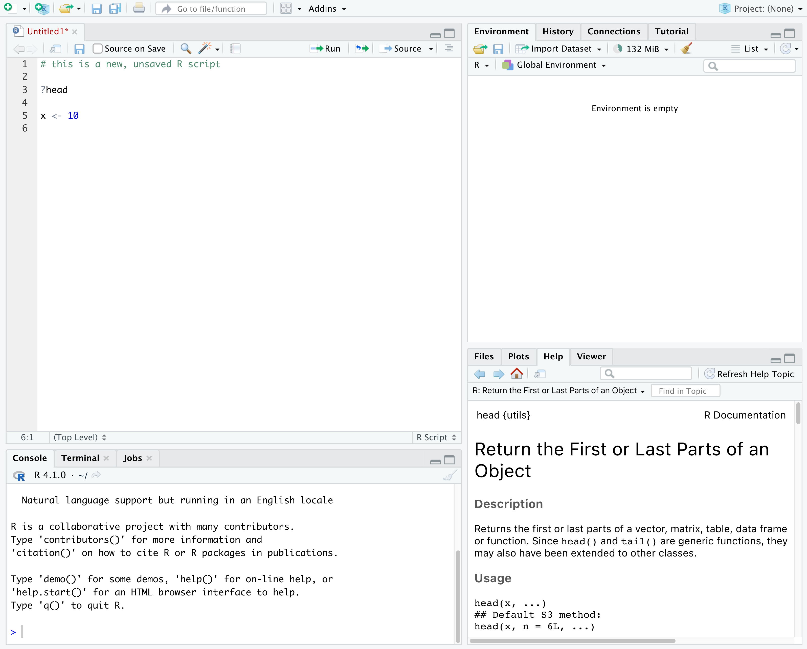
In the above screenshot, we can see 4 “panes” in the default layout:
- Top-Left: the Source pane that displays scripts and
other files.
- If you only have 3 panes, and the Console pane is in the top left, press Shift+Cmd+N (Mac) or Shift+Ctrl+N (Windows) to open a blank R script, which should make the Source pane appear.
- Top-Right: the Environment/History pane, which
shows all the objects in your current R session (Environment) and your
command history (History)
- there are some other tabs here, including Connections, Build, Tutorial, and possibly Git
- we won’t cover any of the other tabs, but RStudio has lots of other useful features
- Bottom-Left: the Console pane, where you can
interact directly with an R console, which interprets R commands and
prints the results
- There are also tabs for Terminal and Jobs
- Bottom-Right: the Files/Plots/Help/Viewer pane to navigate files or view plots and help pages
You can customize the layout of these panes, as well as many settings such as RStudio color scheme, font, and even keyboard shortcuts. You can access these settings by going to the menu bar, then clicking on Tools → Global Options.
RStudio puts most of the things you need to work in R into a single window, and also includes features like keyboard shortcuts, autocompletion of code, and syntax highlighting (different types of code are colored differently, making it easier to navigate your code).
Getting set up in RStudio
It is a good practice to organize your projects into self-contained folders right from the start, so we will start building that habit now. A well-organized project is easier to navigate, more reproducible, and easier to share with others. Your project should start with a top-level folder that contains everything necessary for the project, including data, scripts, and images, all organized into sub-folders.
RStudio provides a “Projects” feature that can make it easier to work on individual projects in R. We will create a project that we will keep everything for this workshop.
- Start RStudio (you should see a view similar to the screenshot above).
- In the top right, you will see a blue 3D cube and the words “Project: (None)”. Click on this icon.
- Click New Project from the dropdown menu.
- Click New Directory, then New Project.
- Type out a name for the project, we recommend
R-Ecology-Workshop. - Put it in a convenient location using the “Create project as a
subdirectory of:” section. We recommend your
Desktop. You can always move the project somewhere else later, because it will be self-contained. - Click Create Project and your new project will open.
Next time you open RStudio, you can click that 3D cube icon, and you will see options to open existing projects, like the one you just made.
One of the benefits to using RStudio Projects is that they
automatically set the working directory to the
top-level folder for the project. The working directory is the folder
where R is working, so it views the location of all files (including
data and scripts) as being relative to the working directory. You may
come across scripts that include something like
setwd("/Users/YourUserName/MyCoolProject"), which directly
sets a working directory. This is usually much less portable, since that
specific directory might not be found on someone else’s computer (they
probably don’t have the same username as you). Using RStudio Projects
means we don’t have to deal with manually setting the working
directory.
There are a few settings we will need to adjust to improve the reproducibility of our work. Go to your menu bar, then click Tools → Global Options to open up the Options window.

Make sure your settings match those highlighted in yellow. We don’t want RStudio to store the current status of our R session and reload it the next time we start R. This might sound convenient, but for the sake of reproducibility, we want to start with a clean, empty R session every time we work. That means that we have to record everything we do into scripts, save any data we need into files, and store outputs like images as files. We want to get used to everything we generate in a single R session being disposable. We want our scripts to be able to regenerate things we need, other than “raw materials” like data.
Organizing your project directory
If you are teaching remotely and sharing only the RStudio window, the new windows that pop up while creating folders will not be shared via Zoom. You can switch to sharing your entire screen, which will allow learners to see the popup windows.
Using a consistent folder structure across all your new projects will help keep a growing project organized, and make it easy to find files in the future. This is especially beneficial if you are working on multiple projects, since you will know where to look for particular kinds of files.
We will use a basic structure for this workshop, which is often a good place to start, and can be extended to meet your specific needs. Here is a diagram describing the structure:
R-Ecology-Workshop
│
└── scripts
│
└── data
│ └── cleaned
│ └── raw
│
└─── images
│
└─── documentsWithin our project folder (R-Ecology-Workshop), we first
have a scripts folder to hold any scripts we write. We also
have a data folder containing cleaned and
raw subfolders. In general, you want to keep your
raw data completely untouched, so once you put data into
that folder, you do not modify it. Instead, you read it into R, and if
you make any modifications, you write that modified file into the
cleaned folder. We also have an images folder
for plots we make, and a documents folder for any other
documents you might produce.
Let’s start making our new folders. Go to the Files
pane (bottom right), and check the current directory, highlighted in
yellow below. You should be in the directory for the project you just
made, in our case R-Ecology-Workshop. You shouldn’t see any
folders in here yet.

Next, click the New Folder button, and type in
scripts to generate your scripts folder. It
should appear in the Files list now. Repeat the process to make your
data, images, and documents
folders. Then, click on the data folder in the Files pane.
This will take you into the data folder, which will be
empty. Use the New Folder button to create
raw and cleaned folders. To return to the
R-Ecology-Workshop folder, click on it in the file path,
which is highlighted in yellow in the previous image. It’s worth noting
that the Files pane helps you create, find, and open
files, but moving through your files won’t change where the
working directory of your project is.
We have prepared a cleaned dataset that you will use towards the end
of the workshop. Since you’re setting up your project directory now,
it’s a good time to download it and add it to your directory. Click this
link to download the file: cleaned data. You may
be prompted to save the file on your computer somewhere, or it might
download automatically to a Downloads folder. If you are prompted, save
it inside the cleaned data folder, which is in the
data folder you just created. If you are not prompted
choose a location, wait until it has downloaded and then move it from
its current location to the cleaned folder using whatever
method you would normally use to move files.
Working in R and RStudio
The basis of programming is that we write down instructions for the computer to follow, and then we tell the computer to follow those instructions. We write these instructions in the form of code, which is a common language that is understood by the computer and humans (after some practice). We call these instructions commands, and we tell the computer to follow the instructions by running (also called executing) the commands.
Console vs. script
You can run commands directly in the R console, or you can write them into an R script. It may help to think of working in the console vs. working in a script as something like cooking. The console is like making up a new recipe, but not writing anything down. You can carry out a series of steps and produce a nice, tasty dish at the end. However, because you didn’t write anything down, it’s harder to figure out exactly what you did, and in what order.
Writing a script is like taking nice notes while cooking- you can tweak and edit the recipe all you want, you can come back in 6 months and try it again, and you don’t have to try to remember what went well and what didn’t. It’s actually even easier than cooking, since you can hit one button and the computer “cooks” the whole recipe for you!
An additional benefit of scripts is that you can leave
comments for yourself or others to read. Lines that
start with # are considered comments and will not be
interpreted as R code.
Console
- The R console is where code is run/executed
- The prompt, which is the
>symbol, is where you can type commands - By pressing Enter, R will execute those commands and print the result.
- You can work here, and your history is saved in the History pane, but you can’t access it in the future
Script
- A script is a record of commands to send to R, preserved in a plain
text file with a
.Rextension - You can make a new R script by clicking
File → New File → R Script, clicking the green+button in the top left corner of RStudio, or pressing Shift+Cmd+N (Mac) or Shift+Ctrl+N (Windows). It will be unsaved, and called “Untitled1” - If you type out lines of R code in a script, you can send them to
the R console to be evaluated
- Cmd+Enter (Mac) or Ctrl+Enter (Windows) will run the line of code that your cursor is on
- If you highlight multiple lines of code, you can run all of them by pressing Cmd+Enter (Mac) or Ctrl+Enter (Windows)
- By preserving commands in a script, you can edit and rerun them quickly, save them for later, and share them with others
- You can leave comments for yourself by starting a line with a
#
Example
Let’s try running some code in the console and in a script. First,
click down in the Console pane, and type out 1+1. Hit
Enter to run the code. You should see your code echoed, and
then the value of 2 returned.
Now click into your blank script, and type out 1+1. With
your cursor on that line, hit Cmd+Enter (Mac) or
Ctrl+Enter (Windows) to run the code. You will see that your
code was sent from the script to the console, where it returned a value
of 2, just like when you ran your code directly in the
console.
- R is a programming language and software used to run commands in that language
- RStudio is software to make it easier to write and run code in R
- Use R Projects to keep your work organized and self-contained
- Write your code in scripts for reproducibility and portability
Content from Data visualization with ggplot2
Last updated on 2026-11-05 | Edit this page
Estimated time: 90 minutes
Overview
Questions
- How do you make plots using R?
- How do you customize and modify plots?
Objectives
- Produce scatter plots and boxplots using
ggplot2. - Represent data variables with plot components.
- Modify the scales of plot components.
- Iteratively build and modify
ggplot2plots by adding layers. - Change the appearance of existing
ggplot2plots using premade and customized themes. - Describe what faceting is and apply faceting in
ggplot2. - Save plots as image files.
Setup
We are going to be using functions from the
ggplot2 package to create visualizations
of data. Functions are predefined bits of code that automate more
complicated actions. R itself has many built-in functions, but we can
access many more by loading other packages of functions
and data into R.
If you don’t have a blank, untitled script open yet, go ahead and
open one with Shift+Cmd+N (Mac) or Shift+Ctrl+N
(Windows). Then save the file to your scripts/ folder, and
title it workshop_code.R.
Earlier, you had to install the ggplot2
package by running install.packages("ggplot2"). That
installed the package onto your computer so that R can access it. In
order to use it in our current session, we have to load
the package using the library() function.
If you do not have ggplot2 installed, you can run
install.packages("ggplot2") in the
console.
It is a good practice not to put install.packages() into
a script. This is because every time you run that whole script, the
package will be reinstalled, which is typically unnecessary. You want to
install the package to your computer once, and then load it with
library() in each script where you need to use it.
R
library(ggplot2)
Later we will learn how to read data from external files into R, but
for now we are going to use a clean and ready-to-use dataset that is
provided by the ratdat data package. To
make our dataset available, we need to load this package too.
R
library(ratdat)
The ratdat package contains data from the Portal Project, which
is a long-term dataset from Portal, Arizona, in the Chihuahuan
desert.
We will be using a dataset called complete_old, which
contains older years of survey data. Let’s try to learn a little bit
about the data. We can use a ? in front of the name of the
dataset, which will bring up the help page for the data.
R
?complete_old
Here we can read descriptions of each variable in our data.
To actually take a look at the data, we can use the
View() function to open an interactive viewer, which
behaves like a simplified version of a spreadsheet program. It’s a handy
function, but somewhat limited when trying to view large datasets.
R
View(complete_old)
If you hover over the tab for the interactive View(),
you can click the “x” that appears, which will close the tab.
We can find out more about the dataset by using the
str() function to examine the structure of
the data.
R
str(complete_old)
OUTPUT
tibble [16,878 × 13] (S3: tbl_df/tbl/data.frame)
$ record_id : int [1:16878] 1 2 3 4 5 6 7 8 9 10 ...
$ month : int [1:16878] 7 7 7 7 7 7 7 7 7 7 ...
$ day : int [1:16878] 16 16 16 16 16 16 16 16 16 16 ...
$ year : int [1:16878] 1977 1977 1977 1977 1977 1977 1977 1977 1977 1977 ...
$ plot_id : int [1:16878] 2 3 2 7 3 1 2 1 1 6 ...
$ species_id : chr [1:16878] "NL" "NL" "DM" "DM" ...
$ sex : chr [1:16878] "M" "M" "F" "M" ...
$ hindfoot_length: int [1:16878] 32 33 37 36 35 14 NA 37 34 20 ...
$ weight : int [1:16878] NA NA NA NA NA NA NA NA NA NA ...
$ genus : chr [1:16878] "Neotoma" "Neotoma" "Dipodomys" "Dipodomys" ...
$ species : chr [1:16878] "albigula" "albigula" "merriami" "merriami" ...
$ taxa : chr [1:16878] "Rodent" "Rodent" "Rodent" "Rodent" ...
$ plot_type : chr [1:16878] "Control" "Long-term Krat Exclosure" "Control" "Rodent Exclosure" ...str() will tell us how many observations/rows (obs) and
variables/columns we have, as well as some information about each of the
variables. We see the name of a variable (such as year),
followed by the kind of variable (int for integer,
chr for character), and the first 10 entries in that
variable. We will talk more about different data types and structures
later on.
Plotting with ggplot2
Probably worth mentioning that people often just say
ggplot when referring to the package
ggplot2.
ggplot2 is a powerful package that
allows you to create complex plots from tabular data (data in a table
format with rows and columns). The gg in
ggplot2 stands for “grammar of graphics”,
and the package uses consistent vocabulary to create plots of widely
varying types. Therefore, we only need small changes to our code if the
underlying data changes or we decide to make a box plot instead of a
scatter plot. This approach helps you create publication-quality plots
with minimal adjusting and tweaking.
ggplot2 is part of the
tidyverse series of packages, which tend
to like data in the “long” or “tidy” format, which means each column
represents a single variable, and each row represents a single
observation. Well-structured data will save you lots of time making
figures with ggplot2. For now, we will use
data that are already in this format. We start learning R by using
ggplot2 because it relies on concepts that
we will need when we talk about data transformation in the next
lessons.
ggplot plots are built step by step by
adding new layers, which allows for extensive flexibility and
customization of plots.
Some languages, like Python, require certain spacing or indentation for code to run properly. This isn’t the case in R, so if you see spaces or indentation in the code from this lesson, it is to improve readability.
To build a plot, we will use a basic template that can be used for different types of plots:
ggplot(data = <DATA>, mapping = aes(<MAPPINGS>)) + <GEOM_FUNCTION>()We use the ggplot() function to create a plot. In order
to tell it what data to use, we need to specify the data
argument. An argument is an input that a function
takes, and you set arguments using the = sign.
R
ggplot(data = complete_old)
We get a blank plot because we haven’t told ggplot()
which variables we want to correspond to parts of the plot. We can
specify the “mapping” of variables to plot elements, such as x/y
coordinates, size, or shape, by using the aes() function.
We’ll also add a comment, which is any line starting with a
#. It’s a good idea to use comments to organize your code
or clarify what you are doing.
R
# adding a mapping to x and y axes
ggplot(data = complete_old, mapping = aes(x = weight, y = hindfoot_length))

Now we’ve got a plot with x and y axes corresponding to variables
from complete_old. However, we haven’t specified how we
want the data to be displayed. We do this using geom_
functions, which specify the type of geometry we want, such
as points, lines, or bars. We can add a geom_point() layer
to our plot by using the + sign. We indent onto a new line
to make it easier to read, and we have to end the first
line with the + sign.
R
ggplot(data = complete_old, mapping = aes(x = weight, y = hindfoot_length)) +
geom_point()
WARNING
Warning: Removed 3081 rows containing missing values or values outside the scale range
(`geom_point()`).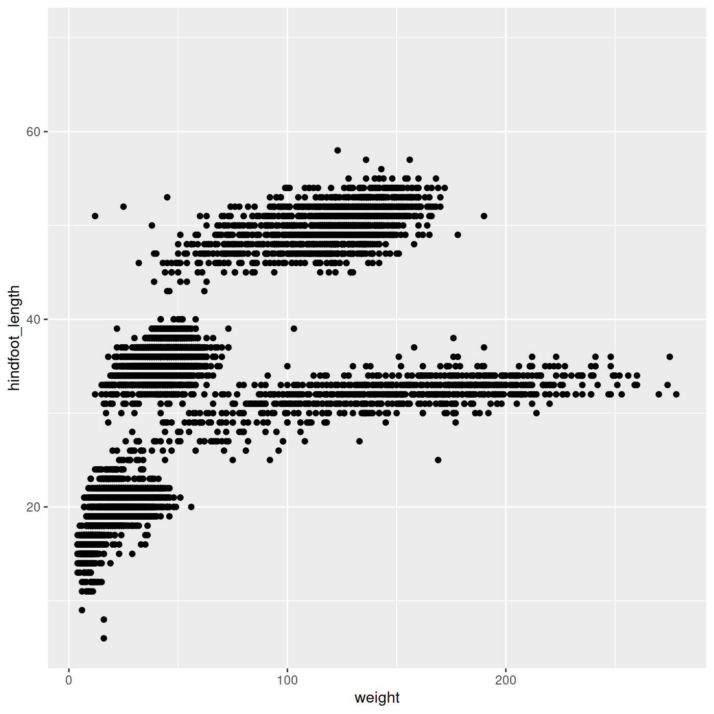
You may notice a warning that missing values were removed. If a
variable necessary to make the plot is missing from a given row of data
(in this case, hindfoot_length or weight), it
can’t be plotted. ggplot2 just uses a warning message to
let us know that some rows couldn’t be plotted.
Warning messages are one of a few ways R will communicate with you. Warnings can be thought of as a “heads up”. Nothing necessarily went wrong, but the author of that function wanted to draw your attention to something. In the above case, it’s worth knowing that some of the rows of your data were not plotted because they had missing data.
A more serious type of message is an error. Here’s an example:
R
ggplot(data = complete_old, mapping = aes(x = weight, y = hindfoot_length)) +
geom_point()
WARNING
Warning: Removed 3081 rows containing missing values or values outside the scale range
(`geom_point()`).
As you can see, we only get the error message, with no plot, because
something has actually gone wrong. This particular error message is
fairly common, and it happened because we misspelled point
as poit. Because there is no function named
geom_poit(), R tells us it can’t find a function with that
name.
Changing aesthetics
Building ggplot plots is often an
iterative process, so we’ll continue developing the scatter plot we just
made. You may have noticed that parts of our scatter plot have many
overlapping points, making it difficult to see all the data. We can
adjust the transparency of the points using the alpha
argument, which takes a value between 0 and 1:
R
ggplot(data = complete_old, mapping = aes(x = weight, y = hindfoot_length)) +
geom_point(alpha = 0.2)
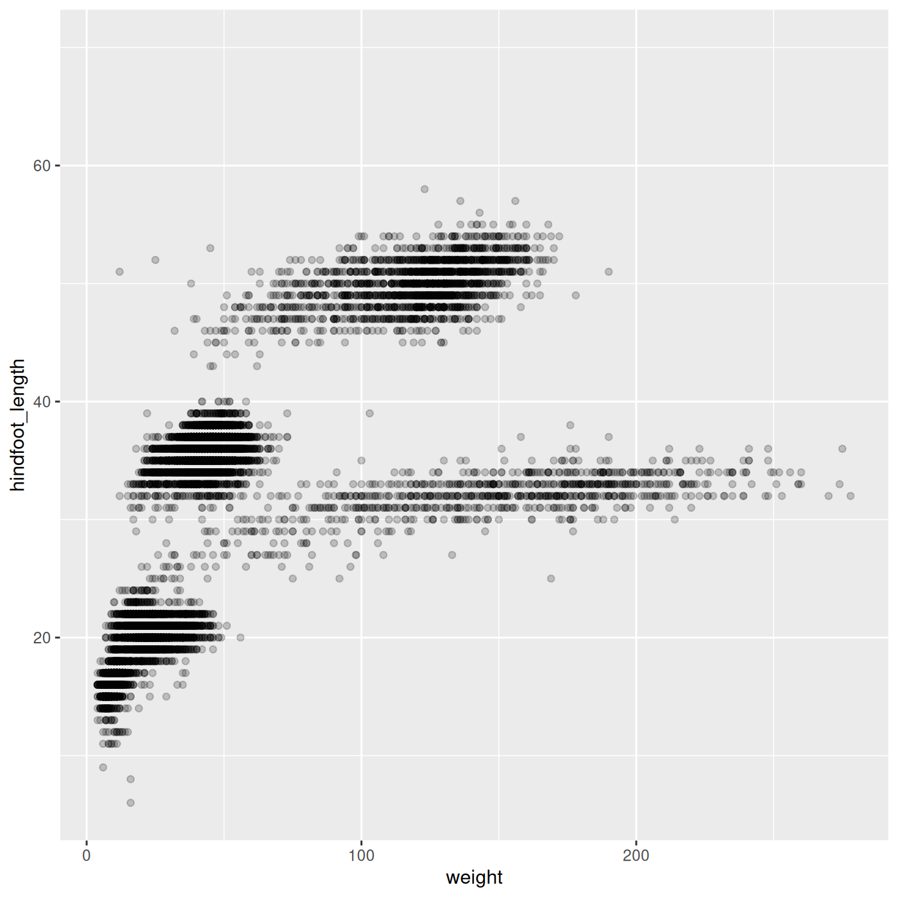
We can also change the color of the points:
R
ggplot(data = complete_old, mapping = aes(x = weight, y = hindfoot_length)) +
geom_point(alpha = 0.2, color = "blue")
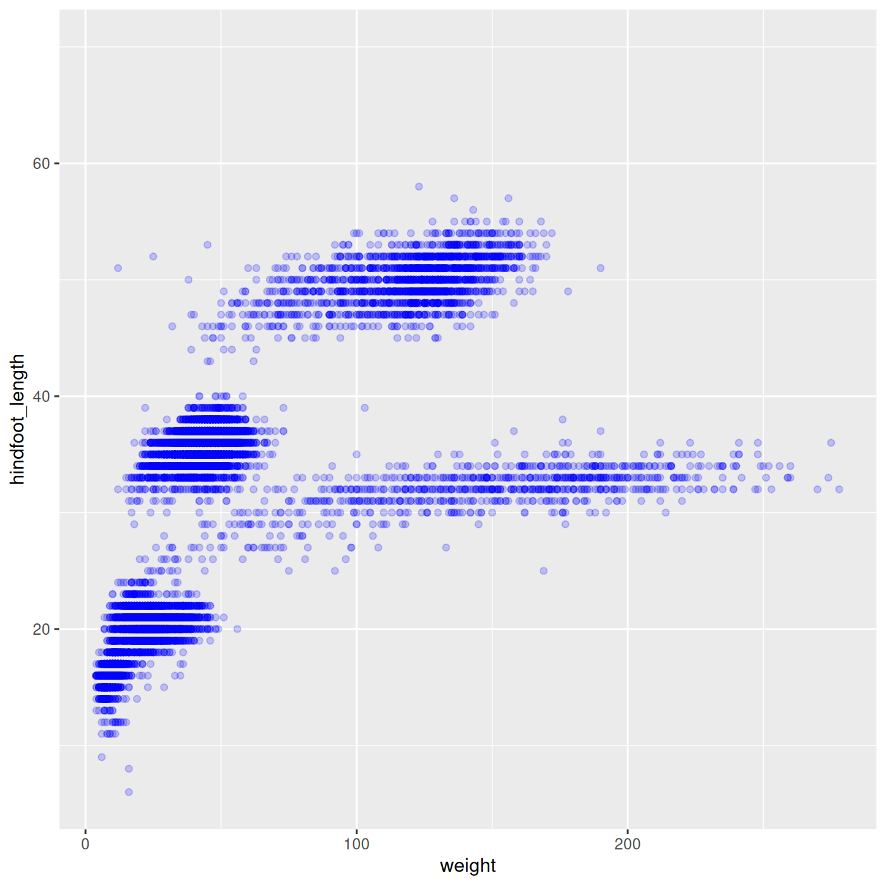
Two common issues you might run into when working in R are forgetting a closing bracket or a closing quote. Let’s take a look at what each one does.
Try running the following code:
R
ggplot(data = complete_old, mapping = aes(x = weight, y = hindfoot_length)) +
geom_point(color = "blue", alpha = 0.2You will see a + appear in your console. This is R
telling you that it expects more input in order to finish running the
code. It is missing a closing bracket to end the geom_point
function call. You can hit Esc in the console to reset
it.
Something similar will happen if you run the following code:
R
ggplot(data = complete_old, mapping = aes(x = weight, y = hindfoot_length)) +
geom_point(color = "blue, alpha = 0.2)A missing quote at the end of blue means that the rest
of the code is treated as part of the quote, which is a bit easier to
see since RStudio displays character strings in a different color.
You will get a different error message if you run the following code:
R
ggplot(data = complete_old, mapping = aes(x = weight, y = hindfoot_length)) +
geom_point(color = "blue", alpha = 0.2))This time we have an extra closing ), which R doesn’t
know what to do with. It tells you there is an unexpected
), but it doesn’t pinpoint exactly where. With enough time
working in R, you will get better at spotting mismatched brackets.
Adding another variable
Let’s try coloring our points according to the sampling plot type
(plot here refers to the physical area where rodents were sampled and
has nothing to do with making graphs). Since we’re now mapping a
variable (plot_type) to a component of the ggplot2 plot
(color), we need to put the argument inside
aes():
R
ggplot(data = complete_old, mapping = aes(x = weight, y = hindfoot_length, color = plot_type)) +
geom_point(alpha = 0.2)
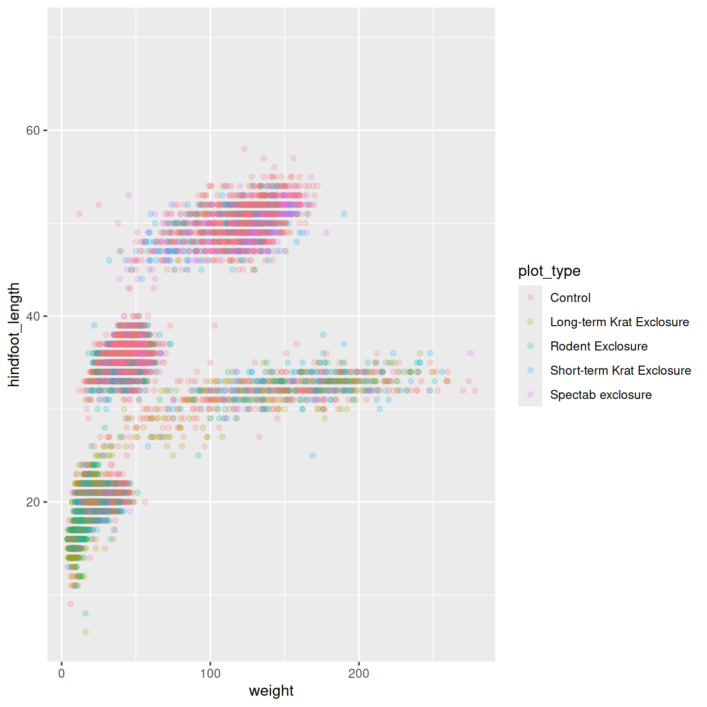
Challenge 1: Modifying plots
- Try modifying the plot so that the
shapeof the point varies bysex. You will set theshapethe same way you set thecolor.
Do you think this is a good way to represent sex with
these data?
R
ggplot(data = complete_old,
mapping = aes(x = weight, y = hindfoot_length, shape = sex)) +
geom_point(alpha = 0.2)

Challenge 1: Modifying plots (continued)
- Now try changing the plot so that the
colorof the points vary byyear. Do you notice a difference in the color scale compared to changing color by plot type? Why do you think this happened?
R
ggplot(data = complete_old,
mapping = aes(x = weight, y = hindfoot_length, color = year)) +
geom_point(alpha = 0.2)
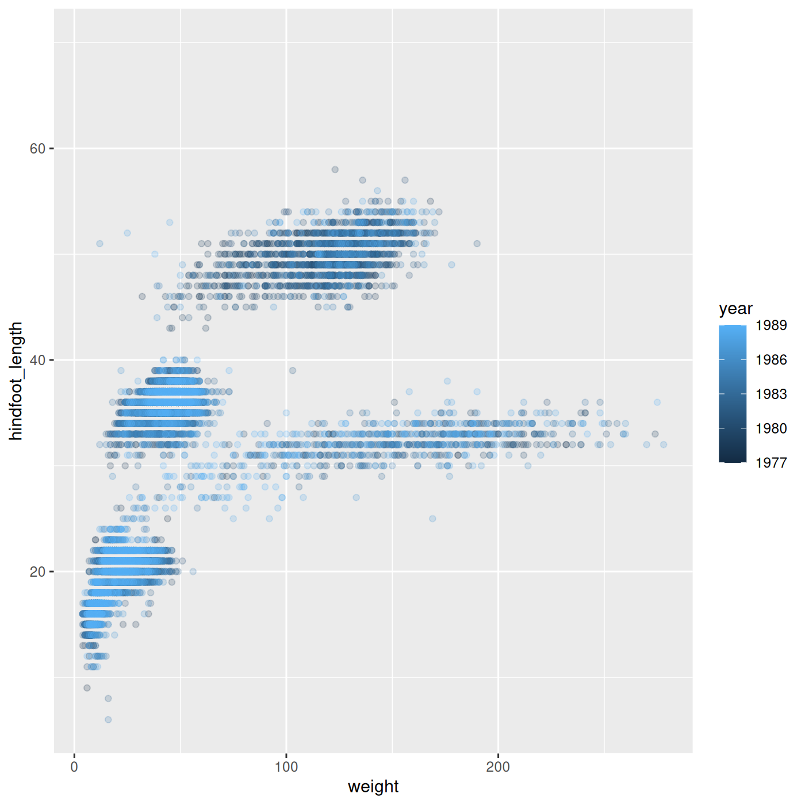
- For Part 2, the color scale is different compared to using
color = plot_typebecauseplot_typeandyearare different variable types.plot_typeis a categorical variable, soggplot2defaults to use a discrete color scale, whereasyearis a numeric variable, soggplot2uses a continuous color scale.
Changing scales
The default discrete color scale isn’t always ideal: it isn’t
friendly to viewers with colorblindness and it doesn’t translate well to
grayscale. However, ggplot2 comes with
quite a few other color scales, including the fantastic
viridis scales, which are designed to be colorblind and
grayscale friendly. We can change scales by adding scale_
functions to our plots:
R
ggplot(data = complete_old, mapping = aes(x = weight, y = hindfoot_length, color = plot_type)) +
geom_point(alpha = 0.2) +
scale_color_viridis_d()
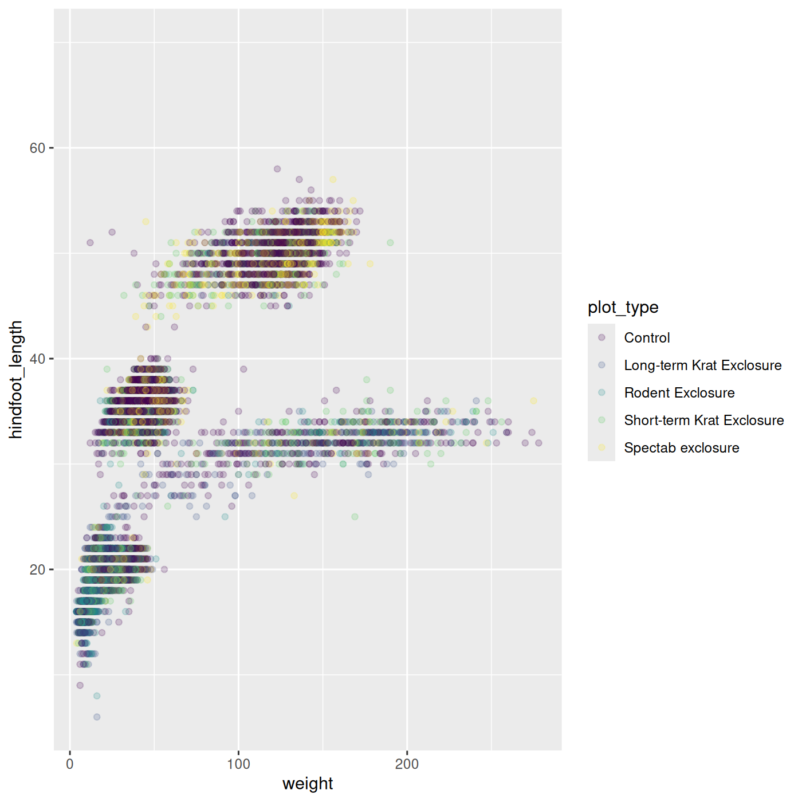
Scales don’t just apply to colors- any plot component that you put
inside aes() can be modified with scale_
functions. Just as we modified the scale used to map
plot_type to color, we can modify the way that
weight is mapped to the x axis by using the
scale_x_log10() function:
R
ggplot(data = complete_old, mapping = aes(x = weight, y = hindfoot_length, color = plot_type)) +
geom_point(alpha = 0.2) +
scale_x_log10()

One nice thing about ggplot and the
tidyverse in general is that groups of functions that do
similar things are given similar names. Any function that modifies a
ggplot scale starts with scale_, making it
easier to search for the right function.
Boxplot
Let’s try making a different type of plot altogether. We’ll start off
with our same basic building blocks using ggplot() and
aes().
R
ggplot(data = complete_old, mapping = aes(x = plot_type, y = hindfoot_length))
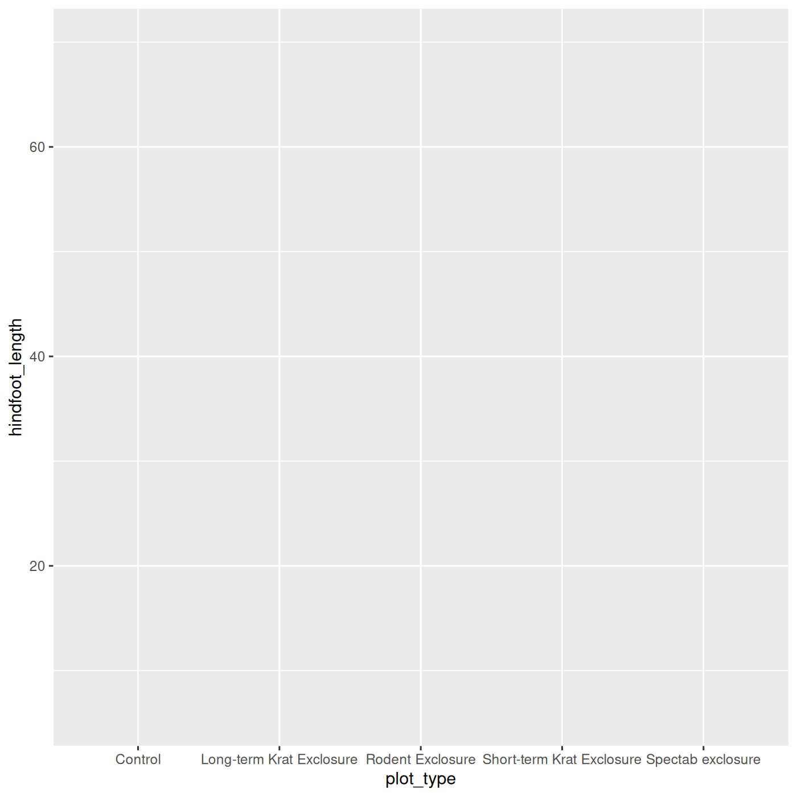
This time, let’s try making a boxplot, which will have
plot_type on the x axis and hindfoot_length on
the y axis. We can do this by adding geom_boxplot() to our
ggplot():
R
ggplot(data = complete_old, mapping = aes(x = plot_type, y = hindfoot_length)) +
geom_boxplot()
WARNING
Warning: Removed 2733 rows containing non-finite outside the scale range
(`stat_boxplot()`).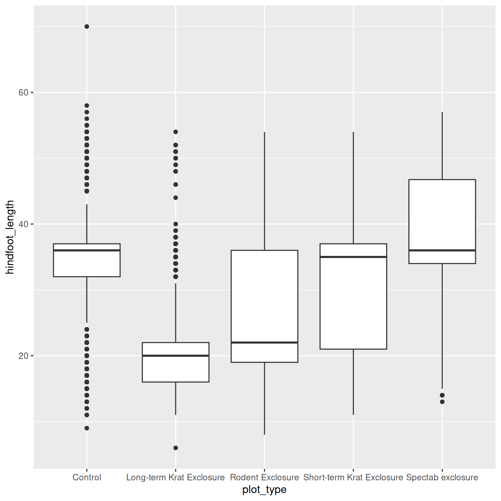
Just as we colored the points before, we can color our boxplot by
plot_type as well:
R
ggplot(data = complete_old, mapping = aes(x = plot_type, y = hindfoot_length, color = plot_type)) +
geom_boxplot()
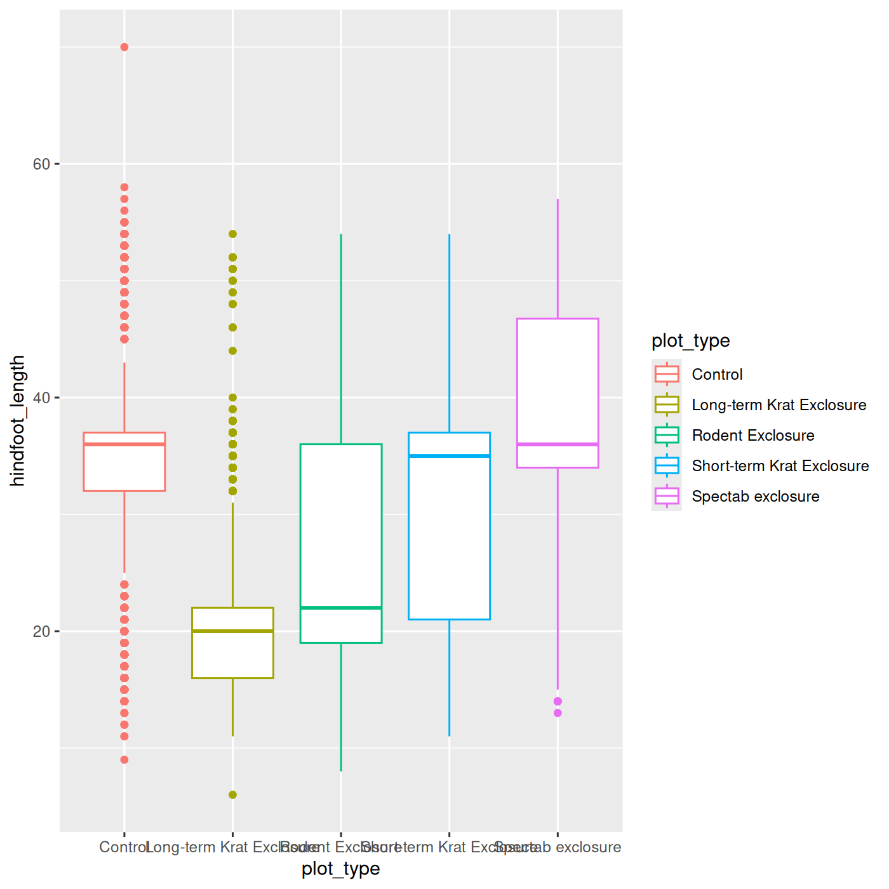
It looks like color has only affected the outlines of
the boxplot, not the rectangular portions. This is because the
color only impacts 1-dimensional parts of a
ggplot: points and lines. To change the color of
2-dimensional parts of a plot, we use fill:
R
ggplot(data = complete_old, mapping = aes(x = plot_type, y = hindfoot_length, fill = plot_type)) +
geom_boxplot()
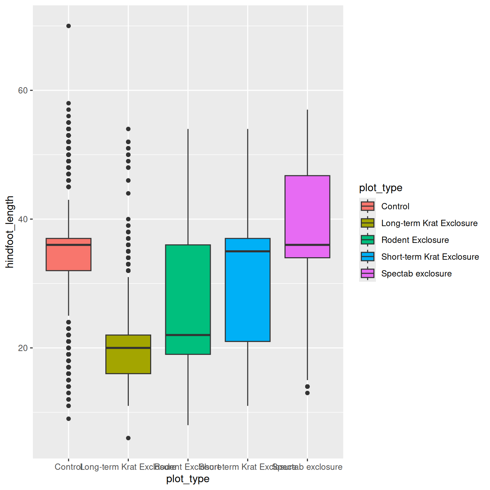
One thing you may notice is that the axis labels are overlapping each
other, depending on how wide your plot viewer is. One way to help make
them more legible is to wrap the text. We can do that
by modifying the labels for the x axis
scale.
We use the scale_x_discrete() function because we have a
discrete axis, and we modify the labels argument. The
function label_wrap_gen() will wrap the text of the labels
to make them more legible.
R
ggplot(data = complete_old, mapping = aes(x = plot_type, y = hindfoot_length, fill = plot_type)) +
geom_boxplot() +
scale_x_discrete(labels = label_wrap_gen(width = 10))
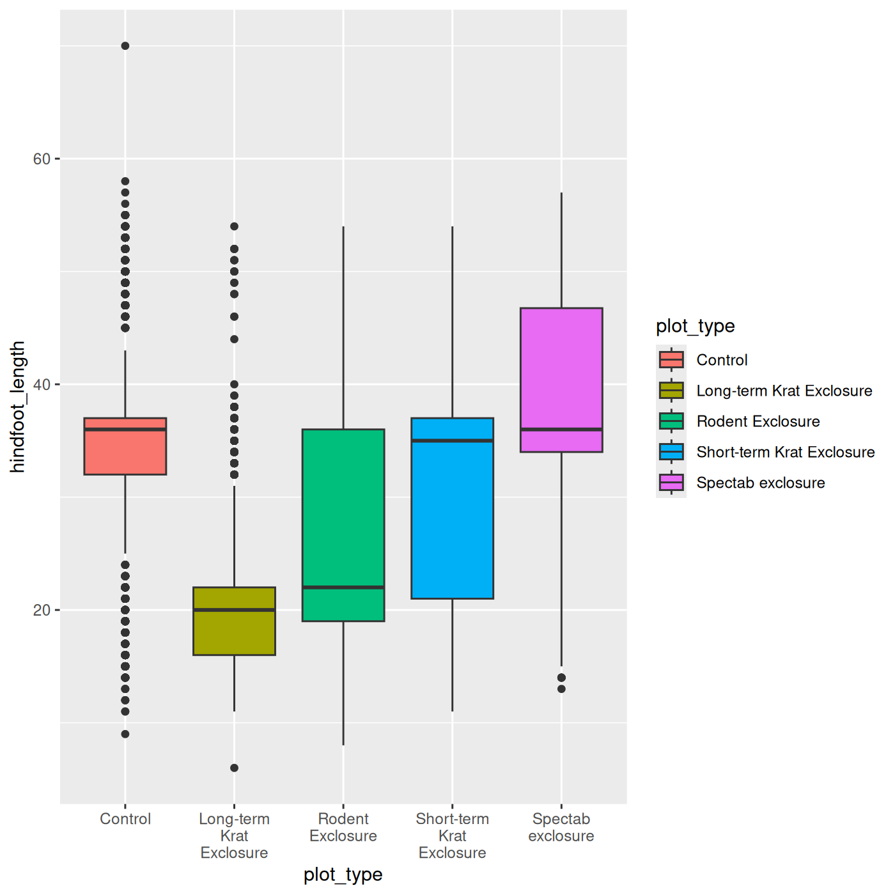
Adding geoms
One of the most powerful aspects of
ggplot is the way we can add components to
a plot in successive layers. While boxplots can be very useful for
summarizing data, it is often helpful to show the raw data as well. With
ggplot, we can easily add another
geom_ to our plot to show the raw data.
Let’s add geom_point() to visualize the raw data. We
will modify the alpha argument to help with
overplotting.
R
ggplot(data = complete_old, mapping = aes(x = plot_type, y = hindfoot_length)) +
geom_boxplot() +
geom_point(alpha = 0.2)
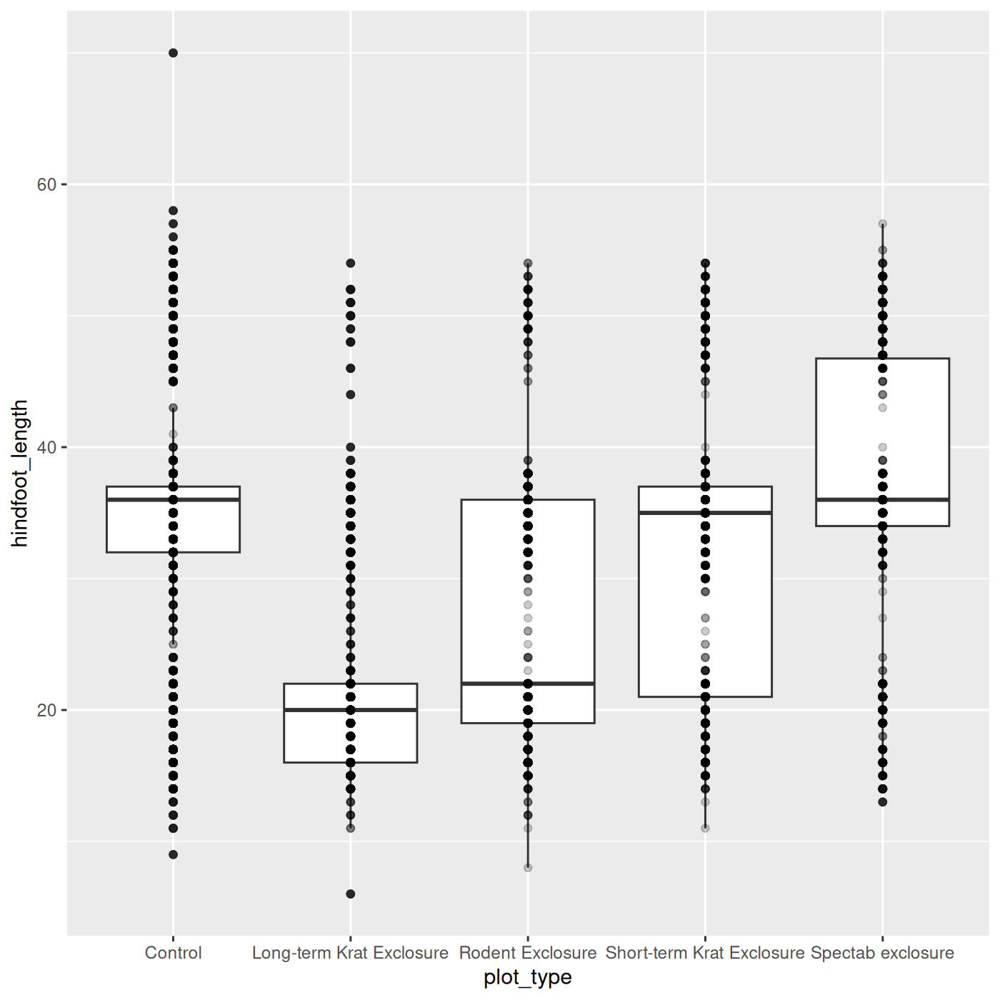
Uh oh… all our points for a given x axis category fall
exactly on a line, which isn’t very useful. We can shift to using
geom_jitter(), which will add points with a bit of random
noise added to the positions to prevent this from happening.
R
ggplot(data = complete_old, mapping = aes(x = plot_type, y = hindfoot_length)) +
geom_boxplot() +
geom_jitter(alpha = 0.2)
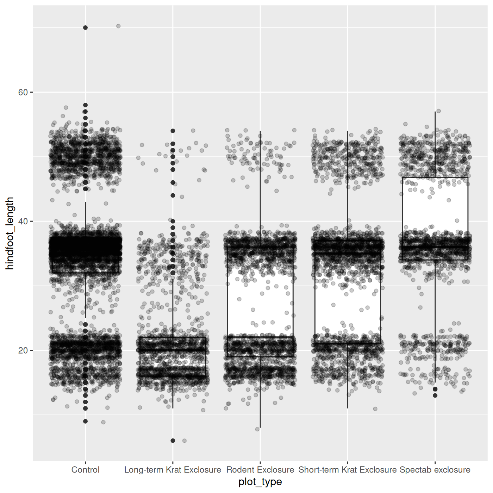
You may have noticed that some of our data points are now appearing
on our plot twice: the outliers are plotted as black points from
geom_boxplot(), but they are also plotted with
geom_jitter(). Since we don’t want to represent these data
multiple times in the same form (points), we can stop
geom_boxplot() from plotting them. We do this by setting
the outliers argument to FALSE.
R
ggplot(data = complete_old, mapping = aes(x = plot_type, y = hindfoot_length)) +
geom_boxplot(outliers = FALSE) +
geom_jitter(alpha = 0.2)
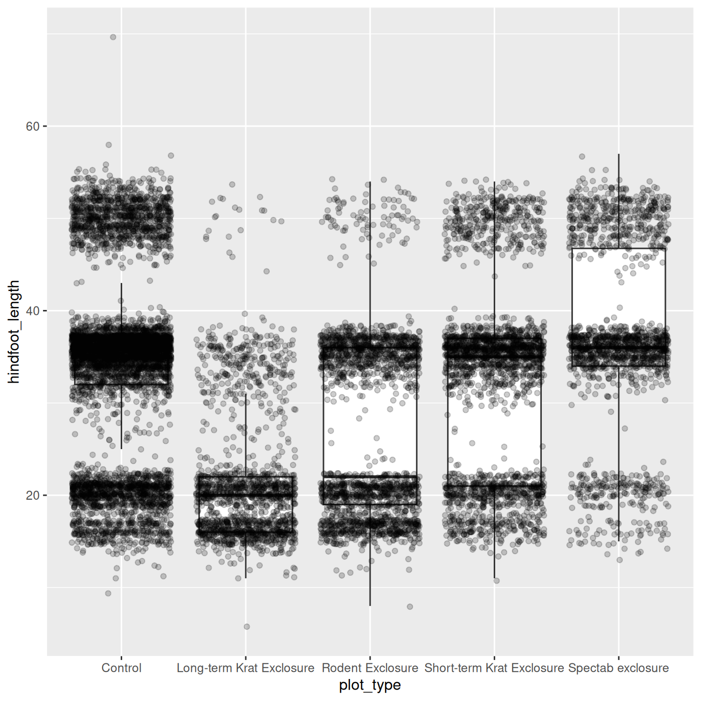
Just as before, we can map plot_type to
color by putting it inside aes().
R
ggplot(data = complete_old, mapping = aes(x = plot_type, y = hindfoot_length, color = plot_type)) +
geom_boxplot(outliers = FALSE) +
geom_jitter(alpha = 0.2)
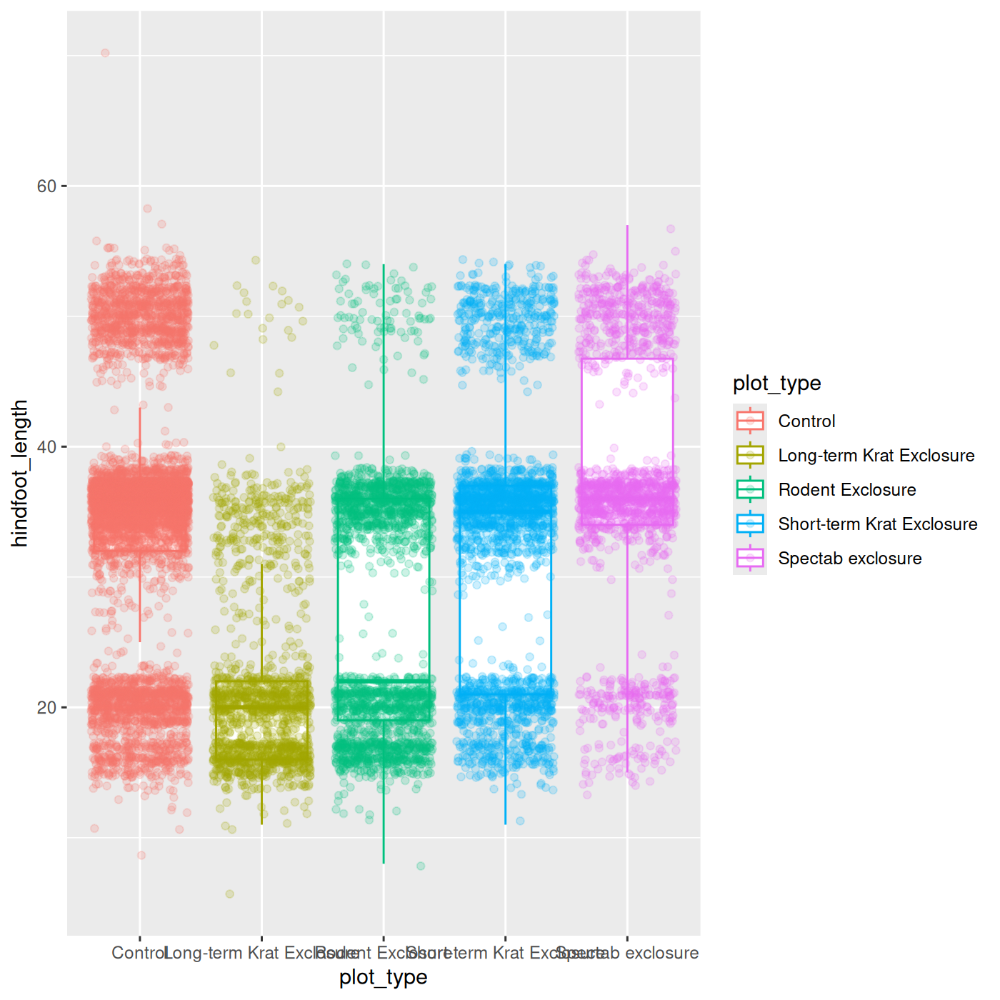
Notice that both the color of the points and the color of the boxplot
lines changed. Any time we specify an aes() mapping inside
our initial ggplot() function, that mapping will apply to
all our geoms.
If we want to limit the mapping to a single geom, we can
put the mapping into the specific geom_ function, like
this:
R
ggplot(data = complete_old, mapping = aes(x = plot_type, y = hindfoot_length)) +
geom_boxplot(outliers = FALSE) +
geom_jitter(aes(color = plot_type), alpha = 0.2)
Now our points are colored according to plot_type, but
the boxplots are all the same color. One thing you might notice is that
even with alpha = 0.2, the points obscure parts of the
boxplot. This is because the geom_point() layer comes after
the geom_boxplot() layer, which means the points are
plotted on top of the boxes. To put the boxplots on top, we switch the
order of the layers:
R
ggplot(data = complete_old, mapping = aes(x = plot_type, y = hindfoot_length)) +
geom_jitter(aes(color = plot_type), alpha = 0.2) +
geom_boxplot(outliers = FALSE)
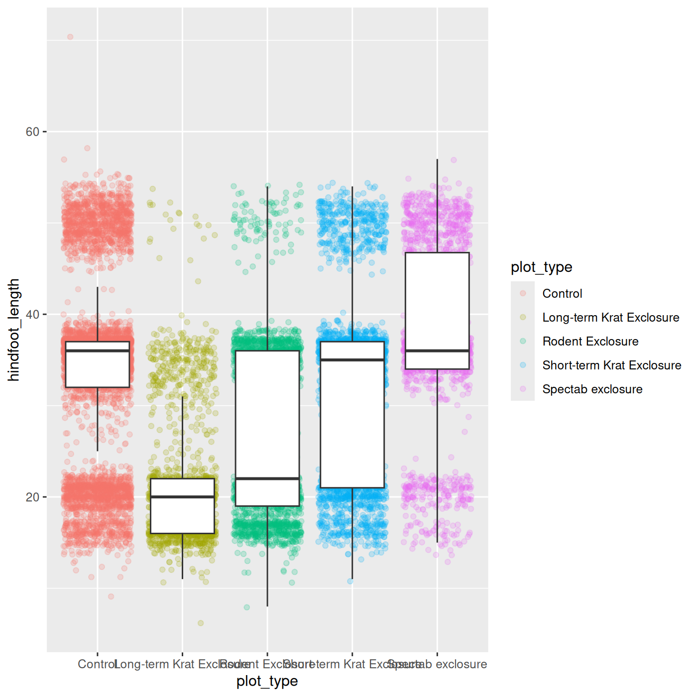
Now we have the opposite problem! The white fill of the
boxplots completely obscures some of the points. To address this
problem, we can remove the fill from the boxplots
altogether, leaving only the black lines. To do this, we set
fill to NA:
R
ggplot(data = complete_old, mapping = aes(x = plot_type, y = hindfoot_length)) +
geom_jitter(aes(color = plot_type), alpha = 0.2) +
geom_boxplot(outliers = FALSE, fill = NA)
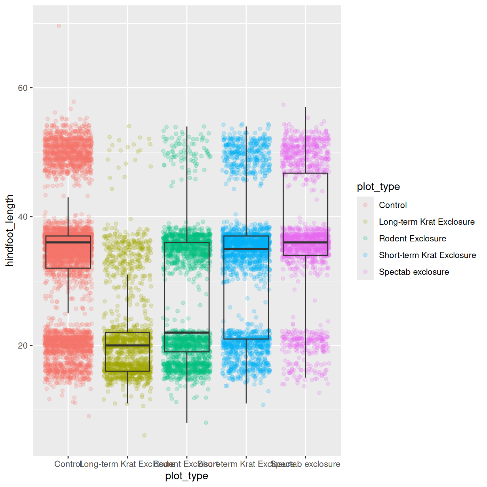
Now we can see all the raw data and our boxplots on top.
Challenge 2: Change geoms
Violin plots are similar to boxplots- try making one using
plot_type and hindfoot_length as the x and y
variables. Remember that all geom functions start with
geom_, followed by the type of geom.
This might also be a place to test your search engine skills. It is
often useful to search for
R package_name stuff you want to search. So for this
example we might search for R ggplot2 violin plot.
R
ggplot(data = complete_old,
mapping = aes(x = plot_type,
y = hindfoot_length,
color = plot_type)) +
geom_jitter(alpha = 0.2) +
geom_violin(fill = "white")
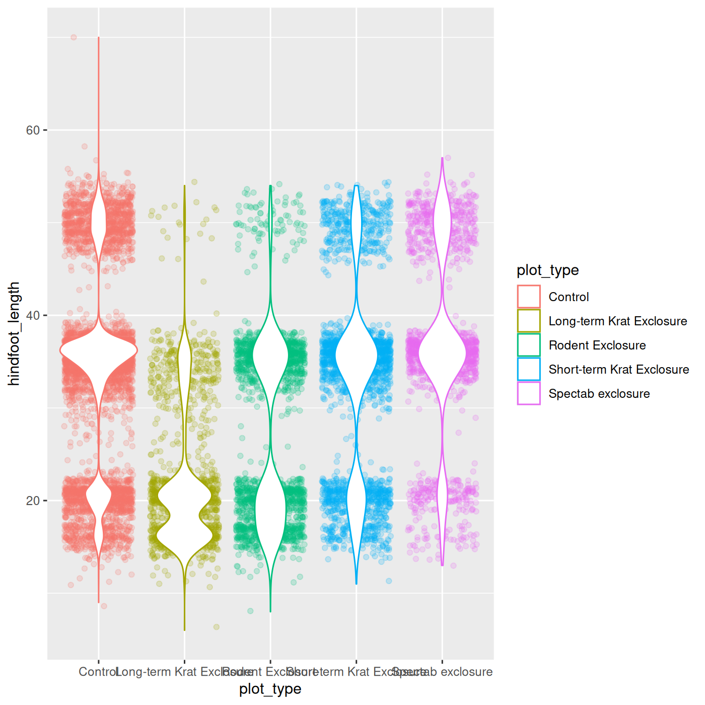
Challenge 2: Change geoms
(continued)
For an extra challenge, , make the color of the points and
outlines of the violins vary by plot_type, and set the fill
of the violins to white. Try playing with the order of the layers to see
what looks best.
R
ggplot(data = complete_old,
mapping = aes(x = plot_type,
y = hindfoot_length,
color = plot_type)) +
geom_jitter(alpha = 0.2) +
geom_violin(fill = "white")
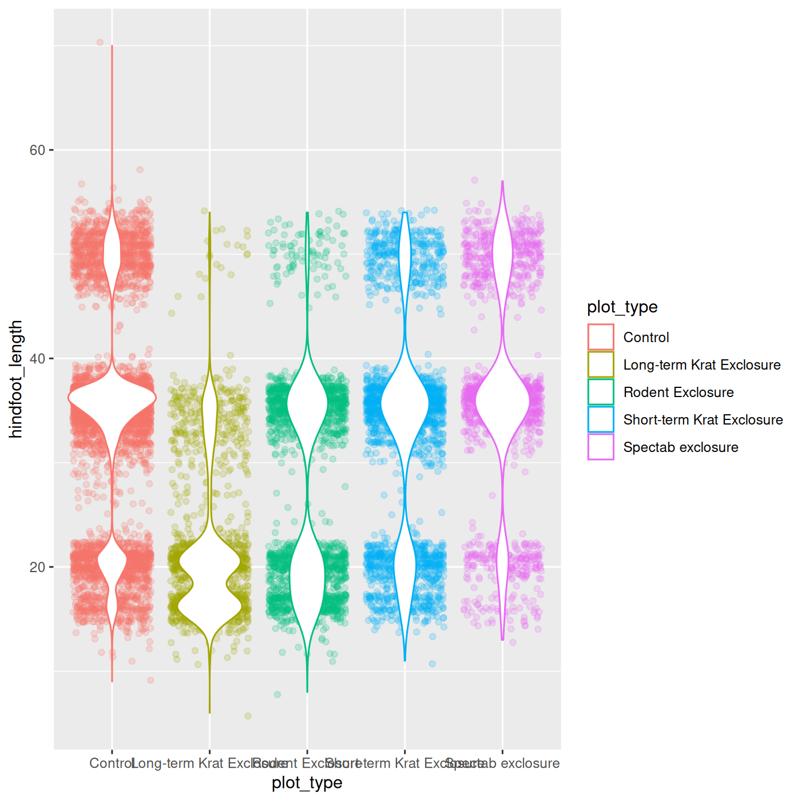
Changing themes
So far we’ve been changing the appearance of parts of our plot
related to our data and the geom_ functions, but we can
also change many of the non-data components of our plot.
At this point, we are pretty happy with the basic layout of our plot,
so we can assign it to a plot to a named
object. We do this using the assignment
arrow <-. What we are doing here is taking the
result of the code on the right side of the arrow, and assigning it to
an object whose name is on the left side of the arrow.
We will create an object called myplot. If you run the
name of the ggplot2 object, it will show the plot, just
like if you ran the code itself.
R
myplot <- ggplot(data = complete_old, mapping = aes(x = plot_type, y = hindfoot_length)) +
geom_jitter(aes(color = plot_type), alpha = 0.2) +
geom_boxplot(outliers = FALSE, fill = NA)
myplot
WARNING
Warning: Removed 2733 rows containing non-finite outside the scale range
(`stat_boxplot()`).WARNING
Warning: Removed 2733 rows containing missing values or values outside the scale range
(`geom_point()`).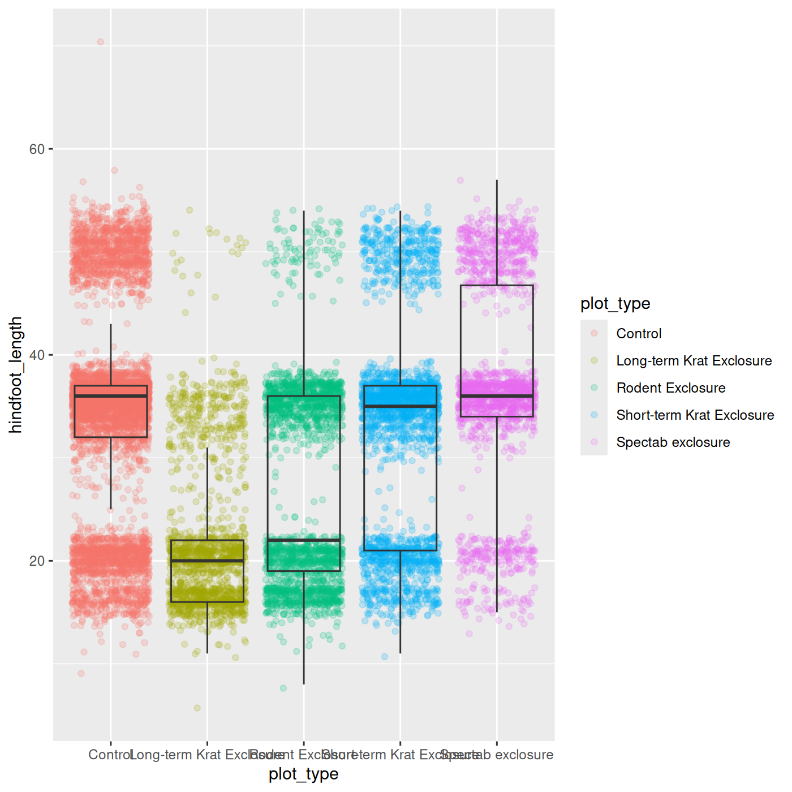
This process of assigning something to an object is
not specific to ggplot2, but rather a general feature of R.
We will be using it a lot in the rest of this lesson. We can now work
with the myplot object as if it was a block of
ggplot2 code, which means we can use + to add
new components to it.
We can change the overall appearance using theme_
functions. Let’s try a black-and-white theme by adding
theme_bw() to our plot:
R
myplot + theme_bw()
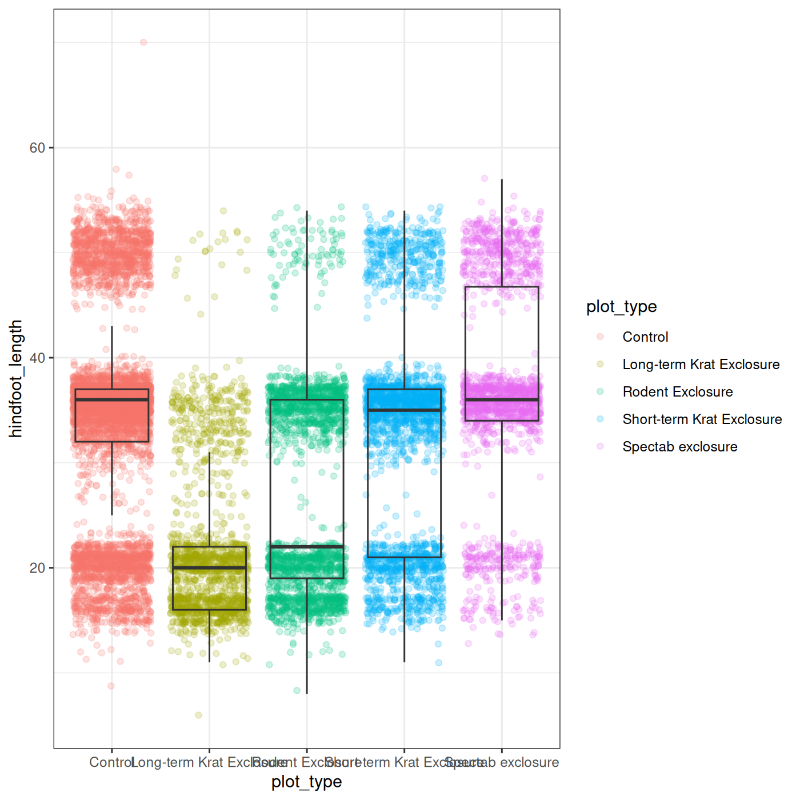
As you can see, a number of parts of the plot have changed.
theme_ functions usually control many aspects of a plot’s
appearance all at once, for the sake of convenience. To individually
change parts of a plot, we can use the theme() function,
which can take many different arguments to change things about the text,
grid lines, background color, and more. Let’s try changing the size of
the text on our axis titles. We can do this by specifying that the
axis.title should be an element_text() with
size set to 14.
R
myplot +
theme_bw() +
theme(axis.title = element_text(size = 14))
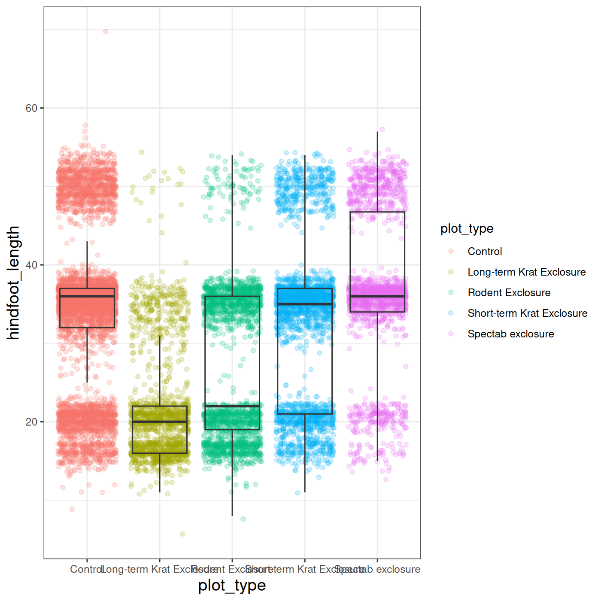
Another change we might want to make is to remove the vertical grid
lines. Since our x axis is categorical, those grid lines aren’t useful.
To do this, inside theme(), we will change the
panel.grid.major.x to an element_blank().
R
myplot +
theme_bw() +
theme(axis.title = element_text(size = 14),
panel.grid.major.x = element_blank())
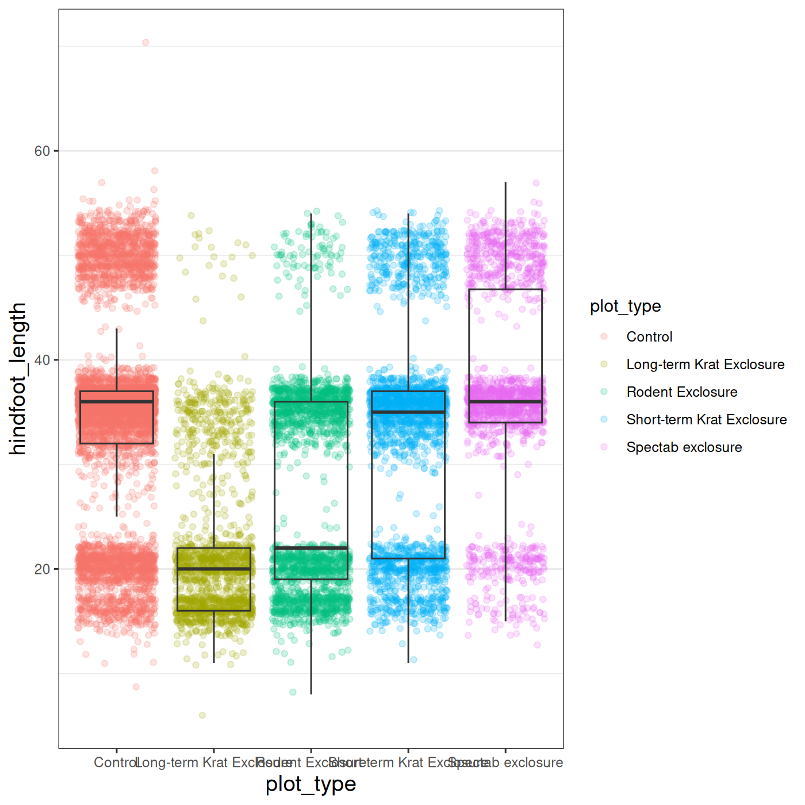
Another useful change might be to remove the color legend, since that
information is already on our x axis. For this one, we will set
legend.position to “none”.
R
myplot +
theme_bw() +
theme(axis.title = element_text(size = 14),
panel.grid.major.x = element_blank(),
legend.position = "none")
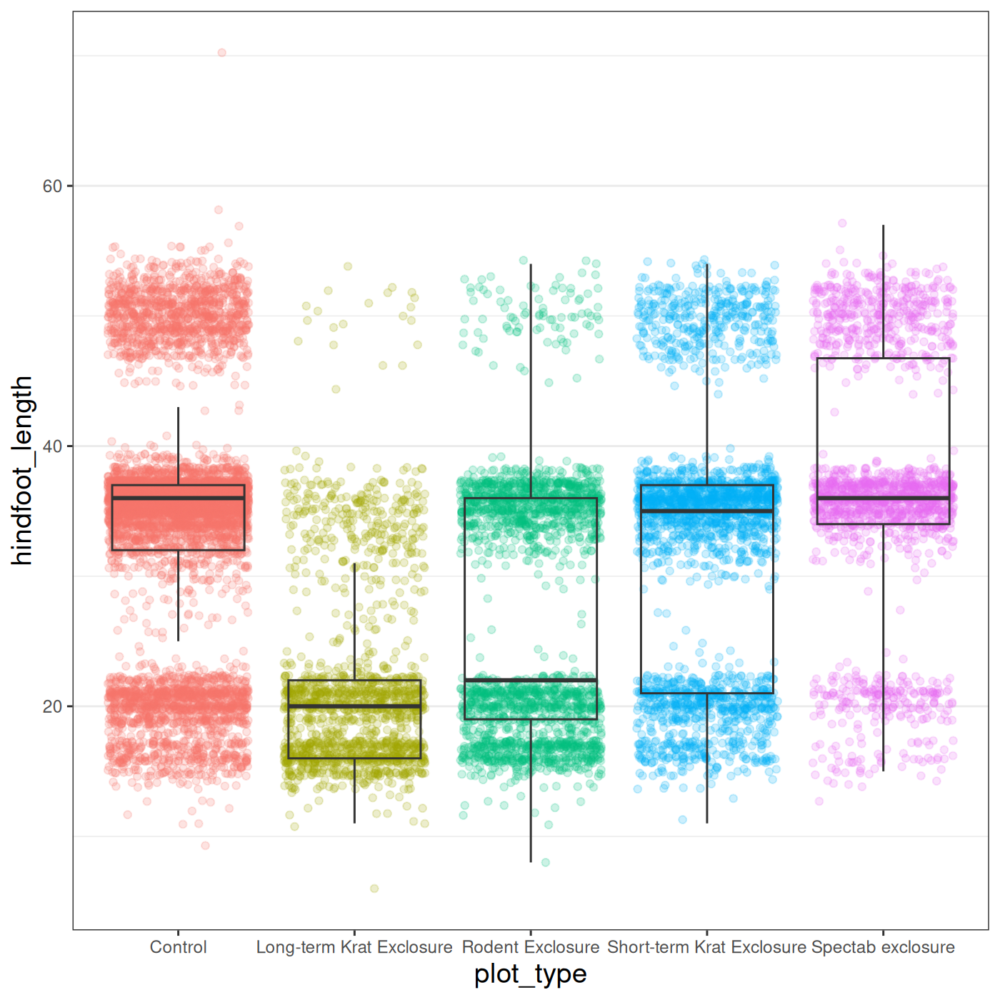
Because there are so many possible arguments to the
theme() function, it can sometimes be hard to find the
right one. Here are some tips for figuring out how to modify a plot
element:
- type out
theme(), put your cursor between the parentheses, and hit Tab to bring up a list of arguments- you can scroll through the arguments, or start typing, which will shorten the list of potential matches
- like many things in the
tidyverse, similar argument start with similar names- there are
axis,legend,panel,plot, andstriparguments
- there are
- arguments have hierarchy
-
textcontrols all text in the whole plot -
axis.titlecontrols the text for the axis titles -
axis.title.xcontrols the text for the x axis title
-
You may have noticed that we have used 3 different approaches to
getting rid of something in ggplot:
-
outliers = FALSEto remove the outliers from our boxplot -
panel.grid.major.x = element_blank()to remove the x grid lines -
legend.position = "none"to remove our legend
Why are there so many ways to do what seems like the same thing?? This is a common frustration when working with R, or with any programming language. There are a couple reasons for it:
- Different people contribute to different packages and functions, and they may choose to do things differently.
- Code may appear to be doing the same thing, when the
details are actually quite different. The inner workings of
ggplot2are actually quite complex, since it turns out making plots is a very complicated process! Because of this, things that seem the same (removing parts of a plot), may actually be operating on very different components or stages of the final plot. - Developing packages is a highly iterative process, and sometimes
things change. However, changing too much stuff can make old code break.
Let’s say removing the legend was introduced as a feature of
ggplot2, and then a lot of time passed before someone added the feature letting you remove outliers fromgeom_boxplot(). Changing the way you remove the legend, so that it’s the same as the boxplot approach, could break all of the code written in the meantime, so developers may opt to keep the old approach in place.
Changing labels
Our plot is really shaping up now. However, we probably want to make
our axis titles nicer, and perhaps add a main title to the plot. We can
do this using the labs() function:
R
myplot +
theme_bw() +
theme(axis.title = element_text(size = 14),
legend.position = "none") +
labs(title = "Rodent size by plot type",
x = "Plot type",
y = "Hindfoot length (mm)")
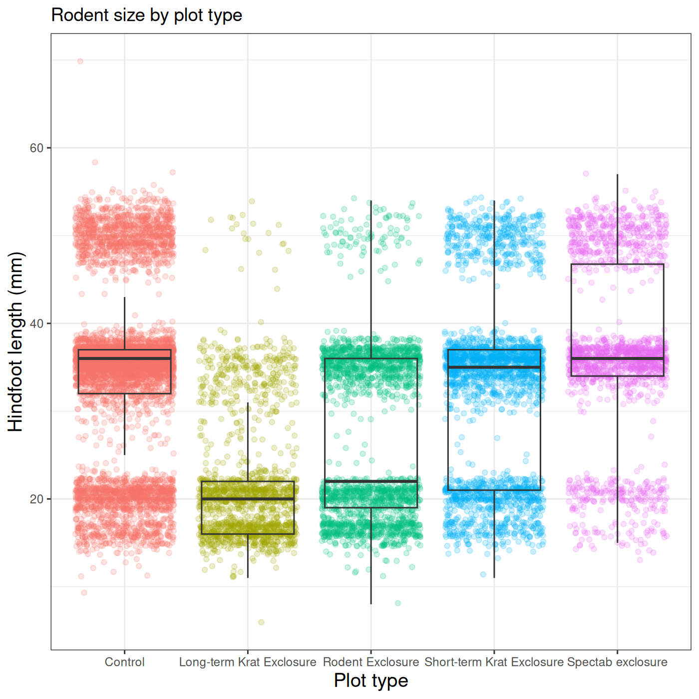
We removed our legend from this plot, but you can also change the
titles of various legends using labs(). For example,
labs(color = "Plot type") would change the title of a color
scale legend to “Plot type”.
Challenge 3: Customizing a plot
Modify the previous plot by adding a descriptive subtitle. Increase the font size of the plot title and make it bold.
Hint: “bold” is referred to as a font “face”
R
myplot +
theme_bw() +
theme(axis.title = element_text(size = 14), legend.position = "none",
plot.title = element_text(face = "bold", size = 20)) +
labs(title = "Rodent size by plot type",
subtitle = "Long-term dataset from Portal, AZ",
x = "Plot type",
y = "Hindfoot length (mm)")
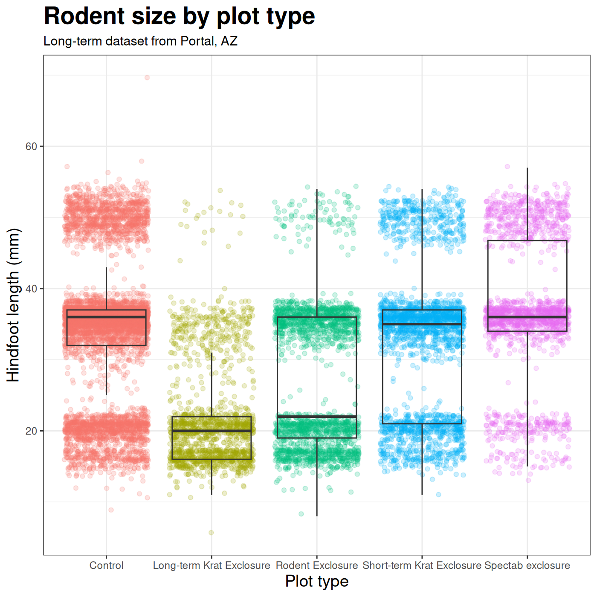
Faceting
One of the most powerful features of
ggplot is the ability to quickly split a
plot into multiple smaller plots based on a categorical variable, which
is called faceting.
So far we’ve mapped variables to the x axis, the y axis, and color, but trying to add a 4th variable becomes difficult. Changing the shape of a point might work, but only for very few categories, and even then, it can be hard to tell the differences between the shapes of small points.
Instead of cramming one more variable into a single plot, we will use
the facet_wrap() function to generate a series of smaller
plots, split out by sex. We also use ncol to
specify that we want them arranged in a single column:
R
myplot +
theme_bw() +
theme(axis.title = element_text(size = 14),
legend.position = "none",
panel.grid.major.x = element_blank()) +
labs(title = "Rodent size by plot type",
x = "Plot type",
y = "Hindfoot length (mm)",
color = "Plot type") +
facet_wrap(vars(sex), ncol = 1)
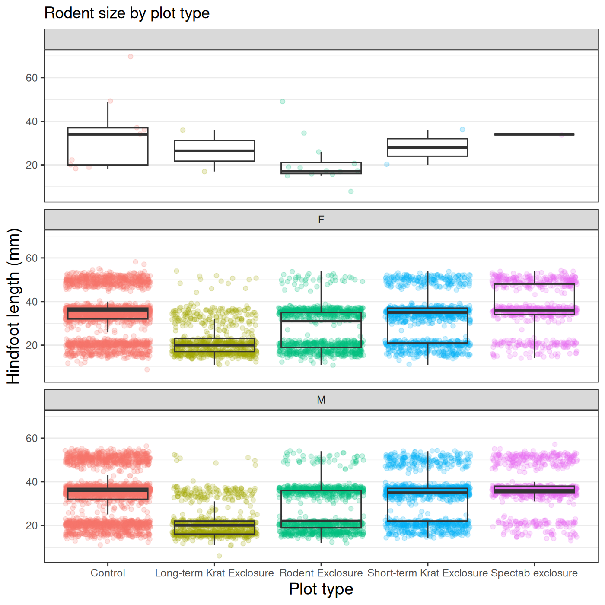
Faceting comes in handy in many scenarios. It can be useful when:
- a categorical variable has too many levels to differentiate by color (such as a dataset with 20 countries)
- your data overlap heavily, obscuring categories
- you want to show more than 3 variables at once
- you want to see each category in isolation while allowing for general comparisons between categories
Exporting plots
Once we are happy with our final plot, we can assign the whole thing
to a new object, which we can call finalplot.
R
finalplot <- myplot +
theme_bw() +
theme(axis.title = element_text(size = 14),
legend.position = "none",
panel.grid.major.x = element_blank()) +
labs(title = "Rodent size by plot type",
x = "Plot type",
y = "Hindfoot length (mm)",
color = "Plot type") +
facet_wrap(vars(sex), ncol = 1)
After this, we can run ggsave() to save our plot. The
first argument we give is the path to the file we want to save,
including the correct file extension. This code will make an image
called rodent_size_plots.jpg in the images/
folder of our current project. We are making a .jpg, but
you can save .pdf, .tiff, and other file
formats. Next, we tell it the name of the plot object we want to save.
We can also specify things like the width and height of the plot in
inches.
R
ggsave(filename = "images/rodent_size_plots.jpg", plot = finalplot,
height = 6, width = 8)
Visualising categorical data
We can use bar plots and pie charts to visualise catergorical data within our data set.
In the example below we have visualised the count of each species within data set using a bar plot:
R
ggplot(complete_old, aes(y = reorder(species_id, species_id, FUN = length))) +
geom_bar(fill = "steelblue") +
labs(x = "Number of records", y = "Species ID",
title = "Records per species") +
theme_minimal() +
theme(axis.text.y = element_text(size = 2))
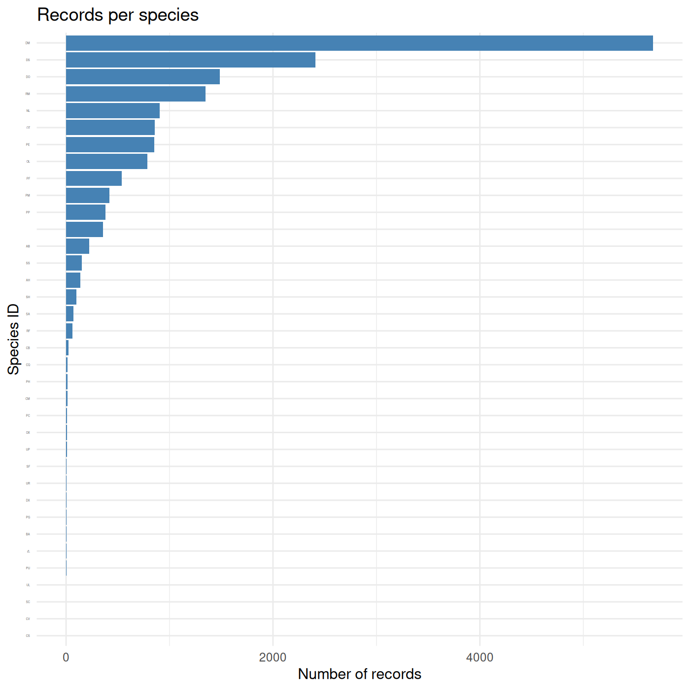
This can alternatively be visualised using a pie chart:
R
# Count records per species
species_counts <- as.data.frame(table(complete_old$species_id))
names(species_counts) <- c("species_id", "n")
ggplot(species_counts, aes(x="", y=n, fill=species_id)) +
geom_bar(stat="identity", width=1, color="white") +
coord_polar("y", start=0) +
theme_void() # remove background, grid, numeric labels
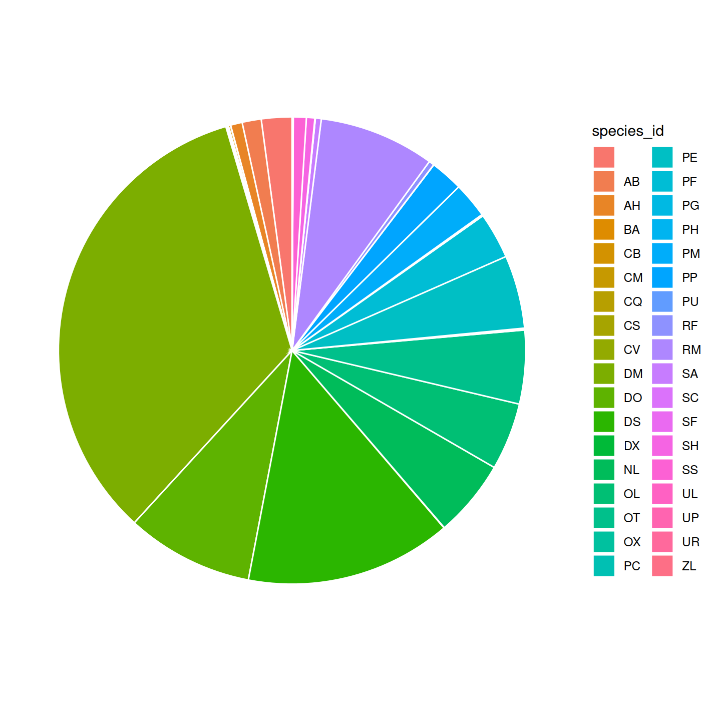
How could this chart be improved?
Challenge 4: Make your own plot
Try making your own plot! You can run str(complete_old)
or ?complete_old to explore variables you might use in your
new plot. Feel free to use variables we have already seen, or some we
haven’t explored yet.
Here are a couple ideas to get you started:
- make a histogram of one of the numeric variables
- try using a different color
scale_ - try changing the size of points or thickness of lines in a
geom
- the
ggplot()function initiates a plot, andgeom_functions add representations of your data - use
aes()when mapping a variable from the data to a part of the plot - use
scale_functions to modify the scales used to represent variables - use premade
theme_functions to broadly change appearance, and thetheme()function to fine-tune - start simple and build your plots iteratively
Content from Exploring and understanding data
Last updated on 2026-10-13 | Edit this page
Estimated time: 60 minutes
Overview
Questions
- How does R store and represent data?
Objectives
- Explore the structure and content of data.frames
- Understand vector types and missing data
- Use vectors as function arguments
- Create and convert factors
- Understand how R assigns values to objects
- Use the RStudio help interface to get help with R functions
- Be able to format questions to get help in the broader R community
Setup
R
library(tidyverse)
library(ratdat)
The data.frame
We just spent quite a bit of time learning how to create
visualizations from the complete_old data, but we did not
talk much about what this complete_old
thing is. It’s important to understand how R thinks about, represents,
and stores data in order for us to have a productive working
relationship with R.
The complete_old data is stored in R as a
data.frame, which is the most common way that R
represents tabular data (data that can be stored in a table format, like
a spreadsheet). We can check what complete_old is by using
the class() function:
R
class(complete_old)
OUTPUT
[1] "tbl_df" "tbl" "data.frame"We can view the first few rows with the head() function,
and the last few rows with the tail() function:
R
head(complete_old)
OUTPUT
# A tibble: 6 × 13
record_id month day year plot_id species_id sex hindfoot_length weight
<int> <int> <int> <int> <int> <chr> <chr> <int> <int>
1 1 7 16 1977 2 NL M 32 NA
2 2 7 16 1977 3 NL M 33 NA
3 3 7 16 1977 2 DM F 37 NA
4 4 7 16 1977 7 DM M 36 NA
5 5 7 16 1977 3 DM M 35 NA
6 6 7 16 1977 1 PF M 14 NA
# ℹ 4 more variables: genus <chr>, species <chr>, taxa <chr>, plot_type <chr>R
tail(complete_old)
OUTPUT
# A tibble: 6 × 13
record_id month day year plot_id species_id sex hindfoot_length weight
<int> <int> <int> <int> <int> <chr> <chr> <int> <int>
1 16873 12 5 1989 8 DO M 37 51
2 16874 12 5 1989 16 RM F 18 15
3 16875 12 5 1989 5 RM M 17 9
4 16876 12 5 1989 4 DM M 37 31
5 16877 12 5 1989 11 DM M 37 50
6 16878 12 5 1989 8 DM F 37 42
# ℹ 4 more variables: genus <chr>, species <chr>, taxa <chr>, plot_type <chr>We used these functions with just one argument, the object
complete_old, and we didn’t give the argument a name, like
we often did with ggplot2. In R, a function’s arguments
come in a particular order, and if you put them in the correct order,
you don’t need to name them. In this case, the name of the argument is
x, so we can name it if we want, but since we know it’s the
first argument, we don’t need to.
Some arguments are optional. For example, the n argument
in head() specifies the number of rows to print. It
defaults to 6, but we can override that by specifying a different
number:
R
head(complete_old, n = 10)
OUTPUT
# A tibble: 10 × 13
record_id month day year plot_id species_id sex hindfoot_length weight
<int> <int> <int> <int> <int> <chr> <chr> <int> <int>
1 1 7 16 1977 2 NL M 32 NA
2 2 7 16 1977 3 NL M 33 NA
3 3 7 16 1977 2 DM F 37 NA
4 4 7 16 1977 7 DM M 36 NA
5 5 7 16 1977 3 DM M 35 NA
6 6 7 16 1977 1 PF M 14 NA
7 7 7 16 1977 2 PE F NA NA
8 8 7 16 1977 1 DM M 37 NA
9 9 7 16 1977 1 DM F 34 NA
10 10 7 16 1977 6 PF F 20 NA
# ℹ 4 more variables: genus <chr>, species <chr>, taxa <chr>, plot_type <chr>If we order them correctly, we don’t have to name either:
R
head(complete_old, 10)
OUTPUT
# A tibble: 10 × 13
record_id month day year plot_id species_id sex hindfoot_length weight
<int> <int> <int> <int> <int> <chr> <chr> <int> <int>
1 1 7 16 1977 2 NL M 32 NA
2 2 7 16 1977 3 NL M 33 NA
3 3 7 16 1977 2 DM F 37 NA
4 4 7 16 1977 7 DM M 36 NA
5 5 7 16 1977 3 DM M 35 NA
6 6 7 16 1977 1 PF M 14 NA
7 7 7 16 1977 2 PE F NA NA
8 8 7 16 1977 1 DM M 37 NA
9 9 7 16 1977 1 DM F 34 NA
10 10 7 16 1977 6 PF F 20 NA
# ℹ 4 more variables: genus <chr>, species <chr>, taxa <chr>, plot_type <chr>Additionally, if we name them, we can put them in any order we want:
R
head(n = 10, x = complete_old)
OUTPUT
# A tibble: 10 × 13
record_id month day year plot_id species_id sex hindfoot_length weight
<int> <int> <int> <int> <int> <chr> <chr> <int> <int>
1 1 7 16 1977 2 NL M 32 NA
2 2 7 16 1977 3 NL M 33 NA
3 3 7 16 1977 2 DM F 37 NA
4 4 7 16 1977 7 DM M 36 NA
5 5 7 16 1977 3 DM M 35 NA
6 6 7 16 1977 1 PF M 14 NA
7 7 7 16 1977 2 PE F NA NA
8 8 7 16 1977 1 DM M 37 NA
9 9 7 16 1977 1 DM F 34 NA
10 10 7 16 1977 6 PF F 20 NA
# ℹ 4 more variables: genus <chr>, species <chr>, taxa <chr>, plot_type <chr>Generally, it’s good practice to start with the required arguments, like the data.frame whose rows you want to see, and then to name the optional arguments. If you are ever unsure, it never hurts to explicitly name an argument.
Aside: Getting Help
To learn more about a function, you can type a ? in
front of the name of the function, which will bring up the official
documentation for that function:
R
?head
Function documentation is written by the authors of the functions, so they can vary pretty widely in their style and readability. The first section, Description, gives you a concise description of what the function does, but it may not always be enough. The Arguments section defines all the arguments for the function and is usually worth reading thoroughly. Finally, the Examples section at the end will often have some helpful examples that you can run to get a sense of what the function is doing.
Another great source of information is package
vignettes. Many packages have vignettes, which are like
tutorials that introduce the package, specific functions, or general
methods. You can run vignette(package = "package_name") to
see a list of vignettes in that package. Once you have a name, you can
run vignette("vignette_name", "package_name") to view that
vignette. You can also use a web browser to go to
https://cran.r-project.org/web/packages/package_name/vignettes/
where you will find a list of links to each vignette. Some packages will
have their own websites, which often have nicely formatted vignettes and
tutorials.
Finally, learning to search for help is probably the most useful
skill for any R user. The key skill is figuring out what you should
actually search for. It’s often a good idea to start your search with
R or R programming. If you have the name of a
package you want to use, start with R package_name.
Many of the answers you find will be from a website called Stack
Overflow, where people ask programming questions and others provide
answers. It is generally poor form to ask duplicate questions, so before
you decide to post your own, do some thorough searching to see if it has
been answered before (it likely has). If you do decide to post a
question on Stack Overflow, or any other help forum, you will want to
create a reproducible example or
reprex. If you are asking a complicated question
requiring your own data and a whole bunch of code, people probably won’t
be able or willing to help you. However, if you can hone in on the
specific thing you want help with, and create a minimal example using
smaller, fake data, it will be much easier for others to help you. If
you search how to make a reproducible example in R, you
will find some great resources to help you out.
Generative AI Help
The section on generative AI is intended to be concise but Instructors may choose to devote more time to the topic in a workshop. Depending on your own level of experience and comfort with talking about and using these tools, you could choose to do any of the following:
- Explain how large language models work and are trained, and/or the difference between generative AI, other forms of AI that currently exist, and the limits of what LLMs can do (e.g., they can’t “reason”).
- Demonstrate how you recommend that learners use generative AI.
- Discuss the ethical concerns listed below, as well as others that you are aware of, to help learners make an informed choice about whether or not to use generative AI tools.
This is a fast-moving technology. If you are preparing to teach this section and you feel it has become outdated, please open an issue on the lesson repository to let the Maintainers know and/or a pull request to suggest updates and improvements.
In addition to the resources we’ve already mentioned for getting help with R, it’s becoming increasingly common to turn to generative AI chatbots such as ChatGPT to get help while coding. You will probably receive some useful guidance by presenting your error message to the chatbot and asking it what went wrong.
However, the way this help is provided by the chatbot is different. Answers on Stack Overflow have (probably) been given by a human as a direct response to the question asked. But generative AI chatbots, which are based on an advanced statistical model, respond by generating the most likely sequence of text that would follow the prompt they are given.
While responses from generative AI tools can often be helpful, they are not always reliable. These tools sometimes generate plausible but incorrect or misleading information, so (just as with an answer found on the internet) it is essential to verify their accuracy. You need the knowledge and skills to be able to understand these responses, to judge whether or not they are accurate, and to fix any errors in the code it offers you.
In addition to asking for help, programmers can use generative AI tools to generate code from scratch; extend, improve and reorganise existing code; translate code between programming languages; figure out what terms to use in a search of the internet; and more. However, there are drawbacks that you should be aware of.
The models used by these tools have been “trained” on very large volumes of data, much of it taken from the internet, and the responses they produce reflect that training data, and may recapitulate its inaccuracies or biases. The environmental costs (energy and water use) of LLMs are a lot higher than other technologies, both during development (known as training) and when an individual user uses one (also called inference). For more information see the AI Environmental Impact Primer developed by researchers at HuggingFace, an AI hosting platform. Concerns also exist about the way the data for this training was obtained, with questions raised about whether the people developing the LLMs had permission to use it. Other ethical concerns have also been raised, such as reports that workers were exploited during the training process.
We recommend that you avoid getting help from generative AI during the workshop for several reasons:
- For most problems you will encounter at this stage, help and answers can be found among the first results returned by searching the internet.
- The foundational knowledge and skills you will learn in this lesson by writing and fixing your own programs are essential to be able to evaluate the correctness and safety of any code you receive from online help or a generative AI chatbot. If you choose to use these tools in the future, the expertise you gain from learning and practising these fundamentals on your own will help you use them more effectively.
- As you start out with programming, the mistakes you make will be the kinds that have also been made – and overcome! – by everybody else who learned to program before you. Since these mistakes and the questions you are likely to have at this stage are common, they are also better represented than other, more specialised problems and tasks in the data that was used to train generative AI tools. This means that a generative AI chatbot is more likely to produce accurate responses to questions that novices ask, which could give you a false impression of how reliable they will be when you are ready to do things that are more advanced.
Knowing more about our data.frame
Let’s get back to investigating our complete_old
data.frame. We can get some useful summaries of each variable using the
summary() function:
R
summary(complete_old)
OUTPUT
record_id month day year plot_id
Min. : 1 Min. : 1.000 Min. : 1.0 Min. :1977 Min. : 1.00
1st Qu.: 4220 1st Qu.: 3.000 1st Qu.: 9.0 1st Qu.:1981 1st Qu.: 5.00
Median : 8440 Median : 6.000 Median :15.0 Median :1983 Median :11.00
Mean : 8440 Mean : 6.382 Mean :15.6 Mean :1984 Mean :11.47
3rd Qu.:12659 3rd Qu.: 9.000 3rd Qu.:23.0 3rd Qu.:1987 3rd Qu.:17.00
Max. :16878 Max. :12.000 Max. :31.0 Max. :1989 Max. :24.00
species_id sex hindfoot_length weight
Length :16878 Length :16878 Min. : 6.00 Min. : 4.00
N.unique : 36 N.unique : 3 1st Qu.:21.00 1st Qu.: 24.00
N.blank : 357 N.blank : 1300 Median :35.00 Median : 42.00
Min.nchar: 0 Min.nchar: 0 Mean :31.98 Mean : 53.22
Max.nchar: 2 Max.nchar: 1 3rd Qu.:37.00 3rd Qu.: 53.00
Max. :70.00 Max. :278.00
NAs :2733 NAs :1692
genus species taxa plot_type
Length :16878 Length :16878 Length :16878 Length :16878
N.unique : 23 N.unique : 30 N.unique : 4 N.unique : 5
N.blank : 0 N.blank : 0 N.blank : 0 N.blank : 0
Min.nchar: 6 Min.nchar: 3 Min.nchar: 4 Min.nchar: 7
Max.nchar: 16 Max.nchar: 15 Max.nchar: 7 Max.nchar: 25
NAs : 357 NAs : 357 NAs : 357
And, as we have already done, we can use str() to look
at the structure of an object:
R
str(complete_old)
OUTPUT
tibble [16,878 × 13] (S3: tbl_df/tbl/data.frame)
$ record_id : int [1:16878] 1 2 3 4 5 6 7 8 9 10 ...
$ month : int [1:16878] 7 7 7 7 7 7 7 7 7 7 ...
$ day : int [1:16878] 16 16 16 16 16 16 16 16 16 16 ...
$ year : int [1:16878] 1977 1977 1977 1977 1977 1977 1977 1977 1977 1977 ...
$ plot_id : int [1:16878] 2 3 2 7 3 1 2 1 1 6 ...
$ species_id : chr [1:16878] "NL" "NL" "DM" "DM" ...
$ sex : chr [1:16878] "M" "M" "F" "M" ...
$ hindfoot_length: int [1:16878] 32 33 37 36 35 14 NA 37 34 20 ...
$ weight : int [1:16878] NA NA NA NA NA NA NA NA NA NA ...
$ genus : chr [1:16878] "Neotoma" "Neotoma" "Dipodomys" "Dipodomys" ...
$ species : chr [1:16878] "albigula" "albigula" "merriami" "merriami" ...
$ taxa : chr [1:16878] "Rodent" "Rodent" "Rodent" "Rodent" ...
$ plot_type : chr [1:16878] "Control" "Long-term Krat Exclosure" "Control" "Rodent Exclosure" ...We get quite a bit of useful information here. First, we are told that we have a data.frame of 16878 observations, or rows, and 13 variables, or columns.
Next, we get a bit of information on each variable, including its
type (int or chr) and a quick peek at the
first 10 values. You might ask why there is a $ in front of
each variable. This is because the $ is an operator that
allows us to select individual columns from a data.frame.
The $ operator also allows you to use tab-completion to
quickly select which variable you want from a given data.frame. For
example, to get the year variable, we can type
complete_old$ and then hit Tab. We get a list of
the variables that we can move through with up and down arrow keys. Hit
Enter when you reach year, which should finish
this code:
R
complete_old$year
OUTPUT
[1] 1977 1977 1977 1977 1977 1977 1977 1977 1977 1977 1977 1977 1977 1977 1977
[16] 1977 1977 1977 1977 1977 1977 1977 1977 1977 1977 1977 1977 1977 1977 1977
[31] 1977 1977 1977 1977 1977 1977 1977 1977 1977 1977 1977 1977 1977 1977 1977
[46] 1977 1977 1977 1977 1977 1977 1977 1977 1977 1977 1977 1977 1977 1977 1977
[61] 1977 1977 1977 1977 1977 1977 1977 1977 1977 1977 1977 1977 1977 1977 1977
[76] 1977 1977 1977 1977 1977 1977 1977 1977 1977 1977 1977 1977 1977 1977 1977
[91] 1977 1977 1977 1977 1977 1977 1977 1977 1977 1977
[ reached 'max' / getOption("max.print") -- omitted 16778 entries ]What we get back is a whole bunch of numbers, the entries in the
year column printed out in order.
Vectors: the building block of data
You might have noticed that our last result looked different from
when we printed out the complete_old data.frame itself.
That’s because it is not a data.frame, it is a vector.
A vector is a 1-dimensional series of values, in this case a vector of
numbers representing years.
Data.frames are made up of vectors; each column in a data.frame is a vector. Vectors are the basic building blocks of all data in R. Basically, everything in R is a vector, a bunch of vectors stitched together in some way, or a function. Understanding how vectors work is crucial to understanding how R treats data, so we will spend some time learning about them.
There are 4 main types of vectors (also known as atomic vectors):
"character"for strings of characters, like ourgenusorsexcolumns. Each entry in a character vector is wrapped in quotes. In other programming languages, this type of data may be referred to as “strings”."integer"for integers. All the numeric values incomplete_oldare integers. You may sometimes see integers represented like2Lor20L. TheLindicates to R that it is an integer, instead of the next data type,"numeric"."numeric", aka"double", vectors can contain numbers including decimals. Other languages may refer to these as “float” or “floating point” numbers."logical"forTRUEandFALSE, which can also be represented asTandF. In other contexts, these may be referred to as “Boolean” data.
Vectors can only be of a single type. Since each
column in a data.frame is a vector, this means an accidental character
following a number, like 29, can change the type of the
whole vector. Mixing up vector types is one of the most common mistakes
in R, and it can be tricky to figure out. It’s often very useful to
check the types of vectors.
To create a vector from scratch, we can use the c()
function, putting values inside, separated by commas.
R
c(1, 2, 5, 12, 4)
OUTPUT
[1] 1 2 5 12 4As you can see, those values get printed out in the console, just
like with complete_old$year. To store this vector so we can
continue to work with it, we need to assign it to an object.
R
num <- c(1, 2, 5, 12, 4)
You can check what kind of object num is with the
class() function.
R
class(num)
OUTPUT
[1] "numeric"We see that num is a numeric vector.
Let’s try making a character vector:
R
char <- c("apple", "pear", "grape")
class(char)
OUTPUT
[1] "character"Remember that each entry, like "apple", needs to be
surrounded by quotes, and entries are separated with commas. If you do
something like "apple, pear, grape", you will have only a
single entry containing that whole string.
Finally, let’s make a logical vector:
R
logi <- c(TRUE, FALSE, TRUE, TRUE)
class(logi)
OUTPUT
[1] "logical"Challenge 1: Coercion
Since vectors can only hold one type of data, something has to be done when we try to combine different types of data into one vector.
- What type will each of these vectors be? Try to guess without
running any code at first, then run the code and use
class()to verify your answers.
R
num_logi <- c(1, 4, 6, TRUE)
num_char <- c(1, 3, "10", 6)
char_logi <- c("a", "b", TRUE)
tricky <- c("a", "b", "1", FALSE)
R
class(num_logi)
OUTPUT
[1] "numeric"R
class(num_char)
OUTPUT
[1] "character"R
class(char_logi)
OUTPUT
[1] "character"R
class(tricky)
OUTPUT
[1] "character"R will automatically convert values in a vector so that they are all the same type, a process called coercion.
Challenge 1: Coercion (continued)
- How many values in
combined_logicalare"TRUE"(as a character)?
R
combined_logical <- c(num_logi, char_logi)
R
combined_logical
OUTPUT
[1] "1" "4" "6" "1" "a" "b" "TRUE"R
class(combined_logical)
OUTPUT
[1] "character"Only one value is "TRUE". Coercion happens when each
vector is created, so the TRUE in num_logi
becomes a 1, while the TRUE in
char_logi becomes "TRUE". When these two
vectors are combined, R doesn’t remember that the 1 in
num_logi used to be a TRUE, it will just
coerce the 1 to "1".
Challenge 1: Coercion (continued)
- Now that you’ve seen a few examples of coercion, you might have started to see that there are some rules about how types get converted. There is a hierarchy to coercion. Can you draw a diagram that represents the hierarchy of what types get converted to other types?
logical → integer → numeric → character
Logical vectors can only take on two values: TRUE or
FALSE. Integer vectors can only contain integers, so
TRUE and FALSE can be coerced to
1 and 0. Numeric vectors can contain numbers
with decimals, so integers can be coerced from, say, 6 to
6.0 (though R will still display a numeric 6
as 6.). Finally, any string of characters can be
represented as a character vector, so any of the other types can be
coerced to a character vector.
Coercion is not something you will often do intentionally; rather,
when combining vectors or reading data into R, a stray character that
you missed may change an entire numeric vector into a character vector.
It is a good idea to check the class() of your results
frequently, particularly if you are running into confusing error
messages.
Missing data
One of the great things about R is how it handles missing data, which
can be tricky in other programming languages. R represents missing data
as NA, without quotes, in vectors of any type. Let’s make a
numeric vector with an NA value:
R
weights <- c(25, 34, 12, NA, 42)
R doesn’t make assumptions about how you want to handle missing data,
so if we pass this vector to a numeric function like min(),
it won’t know what to do, so it returns NA:
R
min(weights)
OUTPUT
[1] NAThis is a very good thing, since we won’t accidentally forget to consider our missing data. If we decide to exclude our missing values, many basic math functions have an argument to remove them:
R
min(weights, na.rm = TRUE)
OUTPUT
[1] 12Vectors as arguments
A common reason to create a vector from scratch is to use in a
function argument. The quantile() function will calculate a
quantile for a given vector of numeric values. We set the quantile using
the probs argument. We also need to set
na.rm = TRUE, since there are NA values in the
weight column.
R
quantile(complete_old$weight, probs = 0.25, na.rm = TRUE)
OUTPUT
25%
24 Now we get back the 25% quantile value for weights. However, we often
want to know more than one quantile. Luckily, the probs
argument is vectorized, meaning it can take a whole
vector of values. Let’s try getting the 25%, 50% (median), and 75%
quantiles all at once.
R
quantile(complete_old$weight, probs = c(0.25, 0.5, 0.75), na.rm = TRUE)
OUTPUT
25% 50% 75%
24 42 53 While the c() function is very flexible, it doesn’t
necessarily scale well. If you want to generate a long vector from
scratch, you probably don’t want to type everything out manually. There
are a few functions that can help generate vectors.
First, putting : between two numbers will generate a
vector of integers starting with the first number and ending with the
last. The seq() function allows you to generate similar
sequences, but changing by any amount.
R
# generates a sequence of integers
1:10
OUTPUT
[1] 1 2 3 4 5 6 7 8 9 10R
# with seq() you can generate sequences with a combination of:
# from: starting value
# to: ending value
# by: how much should each entry increase
# length.out: how long should the resulting vector be
seq(from = 0, to = 1, by = 0.1)
OUTPUT
[1] 0.0 0.1 0.2 0.3 0.4 0.5 0.6 0.7 0.8 0.9 1.0R
seq(from = 0, to = 1, length.out = 50)
OUTPUT
[1] 0.00000000 0.02040816 0.04081633 0.06122449 0.08163265 0.10204082
[7] 0.12244898 0.14285714 0.16326531 0.18367347 0.20408163 0.22448980
[13] 0.24489796 0.26530612 0.28571429 0.30612245 0.32653061 0.34693878
[19] 0.36734694 0.38775510 0.40816327 0.42857143 0.44897959 0.46938776
[25] 0.48979592 0.51020408 0.53061224 0.55102041 0.57142857 0.59183673
[31] 0.61224490 0.63265306 0.65306122 0.67346939 0.69387755 0.71428571
[37] 0.73469388 0.75510204 0.77551020 0.79591837 0.81632653 0.83673469
[43] 0.85714286 0.87755102 0.89795918 0.91836735 0.93877551 0.95918367
[49] 0.97959184 1.00000000R
seq(from = 0, by = 0.01, length.out = 20)
OUTPUT
[1] 0.00 0.01 0.02 0.03 0.04 0.05 0.06 0.07 0.08 0.09 0.10 0.11 0.12 0.13 0.14
[16] 0.15 0.16 0.17 0.18 0.19Finally, the rep() function allows you to repeat a
value, or even a whole vector, as many times as you want, and works with
any type of vector.
R
# repeats "a" 12 times
rep("a", times = 12)
OUTPUT
[1] "a" "a" "a" "a" "a" "a" "a" "a" "a" "a" "a" "a"R
# repeats this whole sequence 4 times
rep(c("a", "b", "c"), times = 4)
OUTPUT
[1] "a" "b" "c" "a" "b" "c" "a" "b" "c" "a" "b" "c"R
# repeats each value 4 times
rep(1:10, each = 4)
OUTPUT
[1] 1 1 1 1 2 2 2 2 3 3 3 3 4 4 4 4 5 5 5 5 6 6 6 6 7
[26] 7 7 7 8 8 8 8 9 9 9 9 10 10 10 10Challenge 2: Creating sequences
- Write some code to generate the following vector:
OUTPUT
[1] -3 -2 -1 0 1 2 3 -3 -2 -1 0 1 2 3 -3 -2 -1 0 1 2 3R
rep(-3:3, 3)
OUTPUT
[1] -3 -2 -1 0 1 2 3 -3 -2 -1 0 1 2 3 -3 -2 -1 0 1 2 3R
# this also works
rep(seq(from = -3, to = 3, by = 1), 3)
OUTPUT
[1] -3 -2 -1 0 1 2 3 -3 -2 -1 0 1 2 3 -3 -2 -1 0 1 2 3R
# you might also store the sequence as an intermediate vector
my_seq <- seq(from = -3, to = 3, by = 1)
rep(my_seq, 3)
OUTPUT
[1] -3 -2 -1 0 1 2 3 -3 -2 -1 0 1 2 3 -3 -2 -1 0 1 2 3Challenge 2: Creating sequences (continued)
- Calculate the quantiles for the
complete_oldhindfoot lengths at every 5% level (0%, 5%, 10%, 15%, etc.)
R
quantile(complete_old$hindfoot_length,
probs = seq(from = 0, to = 1, by = 0.05),
na.rm = T)
OUTPUT
0% 5% 10% 15% 20% 25% 30% 35% 40% 45% 50% 55% 60% 65% 70% 75%
6 16 17 19 20 21 22 31 33 34 35 35 36 36 36 37
80% 85% 90% 95% 100%
37 39 49 51 70 Building with vectors
We have now seen vectors in a few different forms: as columns in a data.frame and as single vectors. However, they can be manipulated into lots of other shapes and forms. Some other common forms are:
- matrices
- 2-dimensional numeric representations
- arrays
- many-dimensional numeric
- lists
- lists are very flexible ways to store vectors
- a list can contain vectors of many different types and lengths
- an entry in a list can be another list, so lists can get deeply nested
- a data.frame is a type of list where each column is an individual vector and each vector has to be the same length, since a data.frame has an entry in every column for each row
- factors
- a way to represent categorical data
- factors can be ordered or unordered
- they often look like character vectors, but behave differently
- under the hood, they are integers with character labels, called levels, for each integer
Factors
We will spend a bit more time talking about factors, since they are
often a challenging type of data to work with. We can create a factor
from scratch by putting a character vector made using c()
into the factor() function:
R
sex <- factor(c("male", "female", "female", "male", "female", NA))
sex
OUTPUT
[1] male female female male female <NA>
Levels: female maleWe can inspect the levels of the factor using the
levels() function:
R
levels(sex)
OUTPUT
[1] "female" "male" The forcats package from the
tidyverse has a lot of convenient functions for working
with factors. We will show you a few common operations, but the
forcats package has many more useful functions.
R
library(forcats)
# change the order of the levels
fct_relevel(sex, c("male", "female"))
OUTPUT
[1] male female female male female <NA>
Levels: male femaleR
# change the names of the levels
fct_recode(sex, "M" = "male", "F" = "female")
OUTPUT
[1] M F F M F <NA>
Levels: F MR
# turn NAs into an actual factor level (useful for including NAs in plots)
fct_na_value_to_level(sex, "(Missing)")
OUTPUT
[1] male female female male female (Missing)
Levels: female male (Missing)In general, it is a good practice to leave your categorical data as a character vector until you need to use a factor. Here are some reasons you might need a factor:
- Another function requires you to use a factor
- You are plotting categorical data and want to control the ordering of categories in the plot
Since factors can behave differently from character vectors, it is always a good idea to check what type of data you’re working with. You might use a new function for the first time and be confused by the results, only to realize later that it produced a factor as an output, when you thought it was a character vector.
It is fairly straightforward to convert a factor to a character vector:
R
as.character(sex)
OUTPUT
[1] "male" "female" "female" "male" "female" NA However, you need to be careful if you’re somehow working with a factor that has numbers as its levels:
R
f_num <- factor(c(1990, 1983, 1977, 1998, 1990))
# this will pull out the underlying integers, not the levels
as.numeric(f_num)
OUTPUT
[1] 3 2 1 4 3R
# if we first convert to characters, we can then convert to numbers
as.numeric(as.character(f_num))
OUTPUT
[1] 1990 1983 1977 1998 1990Assignment, objects, and values
We’ve already created quite a few objects in R using the
<- assignment arrow, but there are a few finer details
worth talking about. First, let’s start with a quick challenge.
Challenge 3: Assignments and objects
What is the value of y after running the following
code?
R
x <- 5
y <- x
x <- 10
R
x <- 5
y <- x
x <- 10
y
OUTPUT
[1] 5Understanding what’s going on here will help you avoid a lot of
confusion when working in R. When we assign something to an object, the
first thing that happens is the righthand side gets evaluated.
The same thing happens when you run something in the console: if you
type x into the console and hit Enter, R returns
the value of x. So when we first ran the line
y <- x, x first gets evaluated to the value
of 5, and this gets assigned to y. The objects
x and y are not actually linked to each other
in any way, so when we change the value of x to
10, y is unaffected.
This also means you can run multiple nested operations, store intermediate values as separate objects, or overwrite values:
R
x <- 5
# first, x gets evaluated to 5
# then 5/2 gets evaluated to 2.5
# then sqrt(2.5) is evaluated
sqrt(x/2)
OUTPUT
[1] 1.581139R
# we can also store the evaluated value of x/2
# in an object y before passing it to sqrt()
y <- x/2
sqrt(y)
OUTPUT
[1] 1.581139R
# first, the x on the righthand side gets evaluated to 5
# then 5 gets squared
# then the resulting value is assigned to the object x
x <- x^2
x
OUTPUT
[1] 25You will be naming a lot of objects in R, and there are a few common naming rules and conventions:
- make names clear without being too long
-
wkgis probably too short -
weight_in_kilogramsis probably too long -
weight_kgis good
-
- names cannot start with a number
- names are case sensitive
- you cannot use the names of fundamental functions in R, like
if,else, orfor- in general, avoid using names of common functions like
c,mean, etc.
- in general, avoid using names of common functions like
- avoid dots
.in names, as they have a special meaning in R, and may be confusing to others - two common formats are
snake_caseandcamelCase - be consistent, at least within a script, ideally within a whole project
- you can use a style guide like Google’s or tidyverse’s
- functions like
head(),str(), andsummary()are useful for exploring data.frames - most things in R are vectors, vectors stitched together, or functions
- make sure to use
class()to check vector types, especially when using new functions - factors can be useful, but behave differently from character vectors
Content from Basic Statistics: describing, modelling and reporting
Last updated on 2026-11-05 | Edit this page
Estimated time: 80 minutes
Overview
Questions
- How can I detect the type of data I have?
- How can I make meaningful summaries of my data?
Objectives
- To be able to describe the different types of data
- To be able to do basic data exploration of a dataset
- To be able to calculate descriptive statistics
- To be able to perform statistical inference on a dataset
Content
- Types of Data
- Exploring your dataset
- Descriptive Statistics
- Inferential Statistics
Data
R
# We will need these libraries and this data later.
library(tidyverse)
library(ggplot2)
Up until this point, we have been working with the complete_old dataframe contained in the ratdat package. However, you typically won’t access data from an R package; it is much more common to access data files stored somewhere on your computer. We are now going to start using the data in our cleaned directory inside the data directory that you downloaded at the beginning of the lesson (instructions here). This file is called surveys_complete_77_89.csv.
# loading data
surveys <- read_csv("data/cleaned/surveys_complete_77_89.csv")ERROR
Error in parse(text = input): <text>:5:4: unexpected symbol
4:
5: Up until
^The big picture
- Research often seeks to answer a question about a larger population by collecting data on a small sample
- Data collection:
- Many variables
- For each person/unit.
- This procedure, sampling, must be controlled so as to ensure representative data.
Descriptive and inferential statistics
Just as data in general are of different types - for example numeric vs text data - statistical data are assigned to different levels of measure. The level of measure determines how we can describe and model the data.
Describing data
- Continuous variables
- Discrete variables
How do we convey information on what your data looks like, using numbers or figures?
Describing continuous data.
First establish the distribution of the data. You can visualise this with a histogram.
R
ggplot(surveys, aes(x = weight)) +
geom_histogram()
ERROR
Error in `ggplot()`:
! could not find function "ggplot"What is the distribution of this data?
What is the distribution of population?
If the raw values are difficult to visualise, so we can take the log of the values and log those. Try this command
R
ggplot(surveys, aes(x = log(weight))) +
geom_histogram()
ERROR
Error in `ggplot()`:
! could not find function "ggplot"What is the distribution of this data?
Parametric vs non-parametric analysis
- Parametric analysis assumes that
- The data follows a known distribution
- It can be described using parameters
- Examples of distributions include, normal, Poisson, exponential.
- Non parametric data
- The data can’t be said to follow a known distribution
Emphasise that parametric is not equal to normal.
Describing parametric and non-parametric data
How do you use numbers to convey what your data looks like.
- Parametric data
- Use the parameters that describe the distribution.
- For a Gaussian (normal) distribution - use mean and standard deviation
- For a Poisson distribution - use average event rate
- etc.
- Non Parametric data
- Use the median (the middle number when they are ranked from lowest to highest) and the interquartile range (the number 75% of the way up the list when ranked minus the number 25% of the way)
- You can use the command
summary(data_frame_name)to get these numbers for each variable.
Mean versus standard deviation
- What does standard deviation mean?
- Both graphs have the same mean (center), but the second one has data which is more spread out.
R
# small standard deviation
dummy_1 <- rnorm(1000, mean = 10, sd = 0.5)
dummy_1 <- as.data.frame(dummy_1)
ggplot(dummy_1, aes(x = dummy_1)) +
geom_histogram()
ERROR
Error in `ggplot()`:
! could not find function "ggplot"R
# larger standard deviation
dummy_2 <- rnorm(1000, mean = 10, sd = 200)
dummy_2 <- as.data.frame(dummy_2)
ggplot(dummy_2, aes(x = dummy_2)) +
geom_histogram()
ERROR
Error in `ggplot()`:
! could not find function "ggplot"Get them to plot the graphs. Explain that we are generating random data from different distributions and plotting them.
Calculating mean and standard deviation
R
mean(surveys$weight, na.rm = TRUE)
ERROR
Error:
! object 'surveys' not foundCalculate the standard deviation and confirm that it is the square root of the variance:
R
sdweight <- sd(surveys$weight, na.rm = TRUE)
ERROR
Error:
! object 'surveys' not foundR
print(sdweight)
ERROR
Error:
! object 'sdweight' not foundR
varweight <- var(surveys$weight, na.rm = TRUE)
ERROR
Error:
! object 'surveys' not foundR
print(varweight)
ERROR
Error:
! object 'varweight' not foundR
sqrt(varweight) == sdweight
ERROR
Error:
! object 'varweight' not foundCalculate the standard deviation and confirm that it is the square root of the variance:
R
sdweight <- sd(surveys$weight, na.rm = TRUE)
ERROR
Error:
! object 'surveys' not foundR
print(sdweight)
ERROR
Error:
! object 'sdweight' not foundR
varweight <- var(surveys$weight, na.rm = TRUE)
ERROR
Error:
! object 'surveys' not foundR
print(varweight)
ERROR
Error:
! object 'varweight' not foundR
sqrt(varweight) == sdweight
ERROR
Error:
! object 'varweight' not foundThe na.rm argument tells R to ignore missing values in
the variable.
Describing discrete data
In our data set there is a variable sex.What is the
proportion of males and females in this data set?
- Frequencies
R
table(surveys$sex)
ERROR
Error:
! object 'surveys' not found- Proportions
R
gendertable <- table(surveys$sex)
ERROR
Error:
! object 'surveys' not foundR
prop.table(gendertable)
ERROR
Error:
! object 'gendertable' not foundContingency tables of frequencies can also be tabulated with table(). For example:
R
table(
surveys$plot_id,
surveys$species_id
)
ERROR
Error:
! object 'surveys' not foundWhich leads quite naturally to the consideration of any association between the observed frequencies.
Inferential statistics
Meaningful analysis
- What is your hypothesis - what is your null hypothesis?
Always: the level of the independent variable has no effect on the level of the dependent variable.
What type of variables (data type) do you have?
What are the assumptions of the test you are using?
Interpreting the result
Testing significance
p-value
<0.05
-
0.03-0.049
- Would benefit from further testing.
0.05 is not a magic number.
Comparing means
It all starts with a hypothesis
- Null hypothesis
- “There is no difference in mean hindfoot length between males and females” \[mean\_height\_men - mean\_height\_women = 0\]
- Alternate hypothesis
- “There is a difference in mean hindfoot length between males and females”
More on hypothesis testing
The null hypothesis (H0) assumes that the true mean difference (μd) is equal to zero.
The two-tailed alternative hypothesis (H1) assumes that μd is not equal to zero.
The upper-tailed alternative hypothesis (H1) assumes that μd is greater than zero.
The lower-tailed alternative hypothesis (H1) assumes that μd is less than zero.
Remember: hypotheses are never about data, they are about the processes which produce the data. The value of μd is unknown. The goal of hypothesis testing is to determine the hypothesis (null or alternative) with which the data are more consistent.
Comparing means
Let’s use the hypothesis introduced above: is there is a difference in hind foot length between species?
R
surveys %>%
group_by(sex) %>%
summarise(mean = mean(hindfoot_length, na.rm=TRUE), n = n())
ERROR
Error in `surveys %>% group_by(sex) %>% summarise(mean = mean(hindfoot_length, na.rm = TRUE),
n = n())`:
! could not find function "%>%"Is the difference between the sexes statistically significant?
t-test
Assumptions of a t-test
One independent categorical variable with 2 groups and one dependent continuous variable
The dependent variable is approximately normally distributed in each group
The observations are independent of each other
For students’ original t-statistic, that the variances in both groups are more or less equal. This constraint should probably be abandoned in favour of always using a conservative test.
Doing a t-test
R
t.test(hindfoot_length. ~ sex, data = surveys)
ERROR
Error:
! object 'surveys' not foundR
# we can also specify specific components
t.test(hindfoot_length. ~ sex, data = surveys)$statistic
ERROR
Error:
! object 'surveys' not foundR
t.test(hindfoot_length. ~ sex, data = surveys)$parameter
ERROR
Error:
! object 'surveys' not foundNotice that the summary()** of the test contains more data than is output by default.
More than two levels of IV
While the t-test is sufficient where there are two levels of the IV,
for situations where there are more than two, we use the
ANOVA family of procedures. To show this, we will
compare the hindfoot_length between species_id
. If the ANOVA result is statistically significant, we will use a
post-hoc test method to do pairwise comparisons (here Tukey’s Honest
Significant Differences.)
R
anovamodel <- aov(surveys$hindfoot_length ~ surveys$species_id)
ERROR
Error:
! object 'surveys' not foundR
summary(anovamodel)
ERROR
Error:
! object 'anovamodel' not foundR
TukeyHSD(anovamodel)
ERROR
Error:
! object 'anovamodel' not foundRegression Modelling
The most common use of regression modelling is to explore the
relationship between two continuous variables, for example between
weight and hindfoot_length in our data. We can
first determine whether there is any significant correlation between the
values, and if there is, plot the relationship.
R
cor.test(surveys$weight, surveys$hindfoot_length)
ERROR
Error:
! object 'surveys' not foundR
ggplot(surveys, aes(weight, hindfoot_length)) +
geom_point() +
geom_smooth()
ERROR
Error in `ggplot()`:
! could not find function "ggplot"Having decided that a further investigation of this relationship is
worthwhile, we can create a linear model with the function
lm().
R
linear_model <- lm(surveys$weight ~ surveys$hindfoot_length)
ERROR
Error:
! object 'surveys' not foundR
summary(linear_model)
ERROR
Error:
! object 'linear_model' not foundRegression with a categorical IV (the t-test)
Run the following code chunk and compare the results to the t-test conducted earlier.
R
surveys %>%
mutate(sex = factor(sex))
ERROR
Error in `surveys %>% mutate(sex = factor(sex))`:
! could not find function "%>%"R
cat_test <- lm(surveys$hindfoot_length ~ surveys$sex)
ERROR
Error:
! object 'surveys' not foundR
summary(cat_test)
ERROR
Error:
! object 'cat_test' not foundChallenge: Regression with a categorical IV (ANOVA)
Use the lm() function to model the relationship between
surveys$hindfoot_length and
surveys$species_id.
Compare the results with the ANOVA carried out earlier.
First we need to convert species_id to a factor, then we
can create our model. If we compare the p-values for the Anova
(<2e-16 *** and the lm we have just created (< 2.2e-16) we can see
that the outcome is the same.
R
surveys %>%
mutate(species_id = factor(species_id))
ERROR
Error in `surveys %>% mutate(species_id = factor(species_id))`:
! could not find function "%>%"R
model_anova <- lm(surveys$hindfoot_length ~ surveys$species_id)
ERROR
Error:
! object 'surveys' not foundR
summary(model_anova)
ERROR
Error:
! object 'model_anova' not found- R has a range of in-built functions to enable initial data exploration.
- Linear models (lm) can be used with continuous and categorical variables.